Como nos conhecemos: Estamos conectados desde pequeno, desde o fundamental, e é exatamente isso que faz eu te amar tanto, pois, sempre esteve óbvio que seria você.
Primeiro encontro: O primeiro encontro oficial foi no Habib's, porém, eu sou muito mais os dias que a gente se via na esquina de cima da academia.
Momentos especiais: Nossa viagem pra Maringá, porém, acada segundo com você é extremamente especial.
Galeria de Fotos
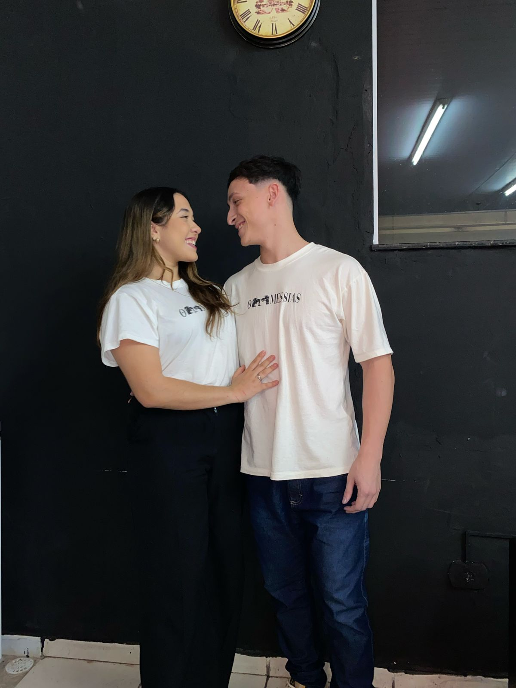
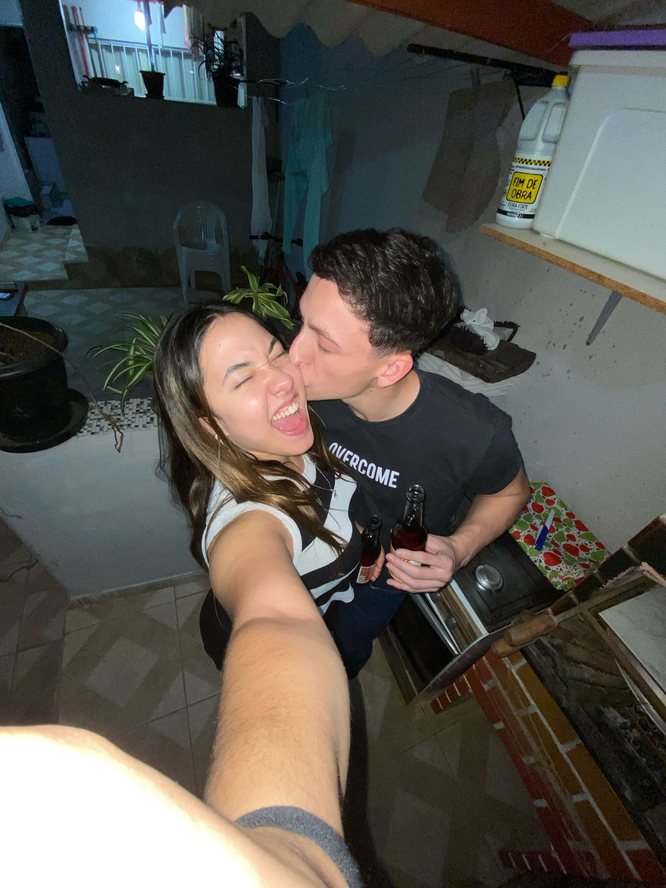
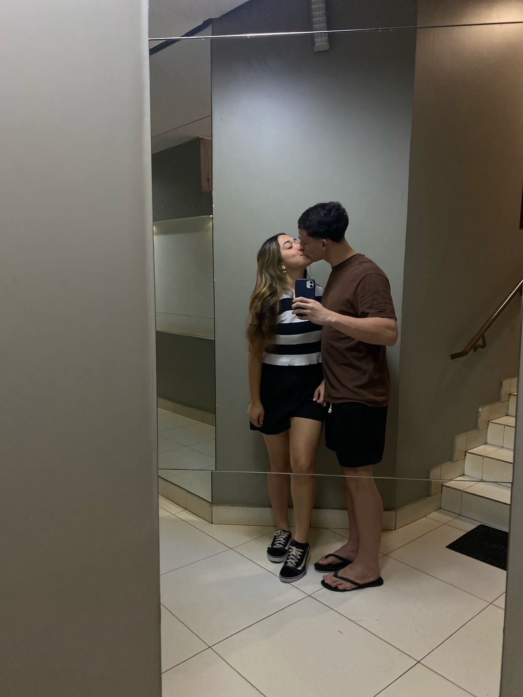
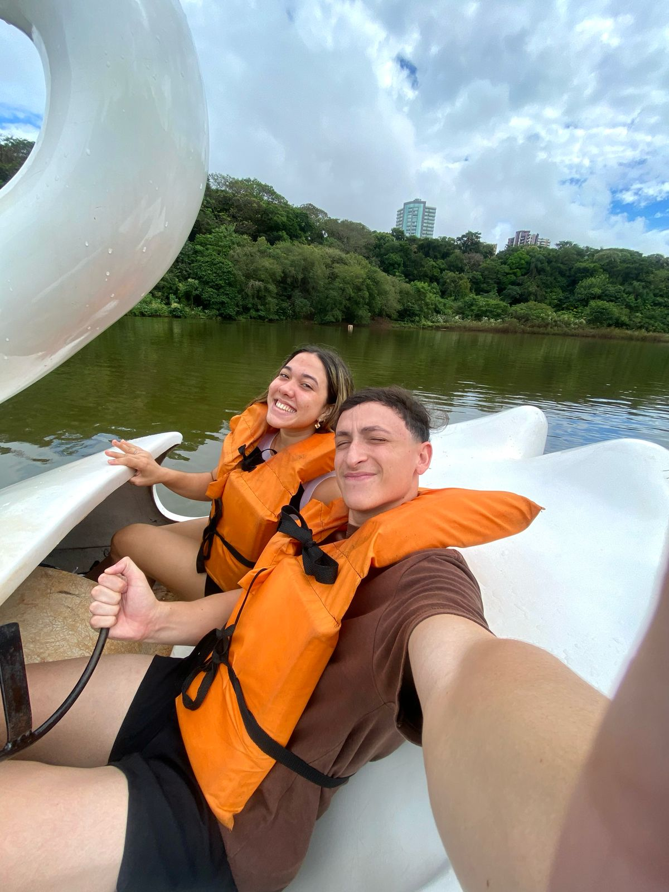
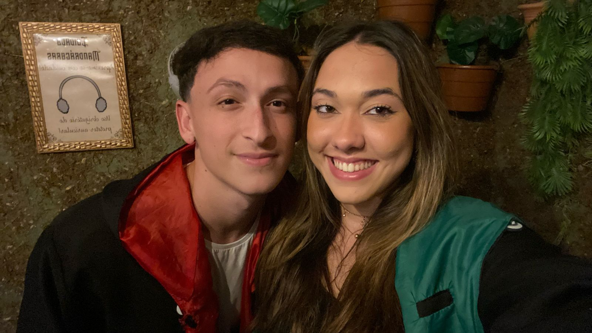
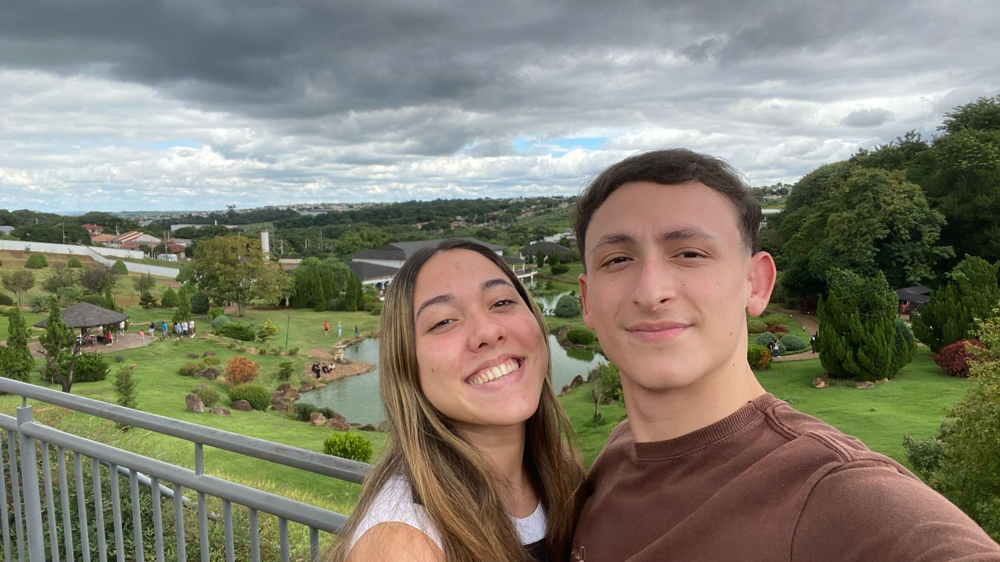
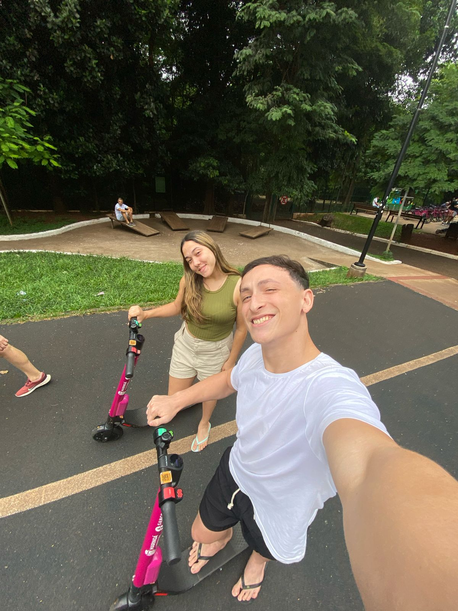
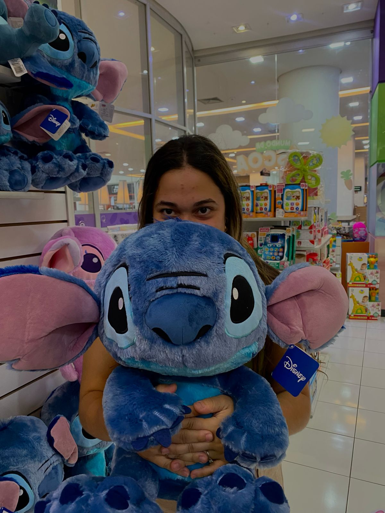
Nossa Música 🎶
Contagem Regressiva Para 4 Anos 📅
Carregando...
Nossos Planos 🌟
🌍 Viajar para Itália juntos
🏫 Casarmos em um campo
🏡 Mudarmos para Maringá
🐈 Adotarmos nosso gato laranja
25/06/2025 - Dia 43
bommm dia meu neném, tudo bem?
meu amor, espero que sua cólica esteja melhor já, e toda dor tenha passado meu amor.
sei que doi muito e incomoda, então, de verdade, eu espero que já tenha melhorado meu neném.
eu te amo mais que tudo, vou cuidar de você pro resto da minha vida meu amor.
quando estivermos casados, vou cuidar de você toda vez que essa cólica aparecer
Vou fazer massagem, passar a roupa pra você por, remédio, docinho, oq for necessário meu amor.
Eu vou cuidar de você pro resto da minha vida.
to aqui trabalhando nesse frio imenso, misericorida das pedrinhas de gelo congelante
assistindo super onze e programando de luva KKKKKKK
essa serie e muito boa amor, eu sei decorado, sinto emoção assistindo ate hoje, é sensacional KKKKKKK
eu te amo meu neném e vou fazer de tudo por você.
Sei que ainda tenho meus erros, tenho minhas falhas, sei que nem tudo é um mar de rosas, mas eu sempre vou dar o meu máximo por você meu amor, eu sempre vou estar me esforçando por você.
eu te amo mais que tudo e a única coisa que eu quero é me casar com você.
você é a mulher da minha vida meu amor.
mal posso esperar para chegar com flores numa quarta feira aleatória e te dar um beijão meu amor.
eu te amo mais que tudo!
você é a menina que eu sonho todos os dias, você é quem eu me apaixono todos os dias, seja te vendo, ou não.
Mas quando eu te vejo, eu fico mais apaixonado ainda.
Cada sorriso seu me fascina, me deixa bobo, cada vez que eu escuto o seu "eu te amo", eu fico besta meu amor.
você é tudo pra mim, você é a mulher da minha vida, você é a minha futura noiva, futura esposa.
eu te amo mais que tudo.
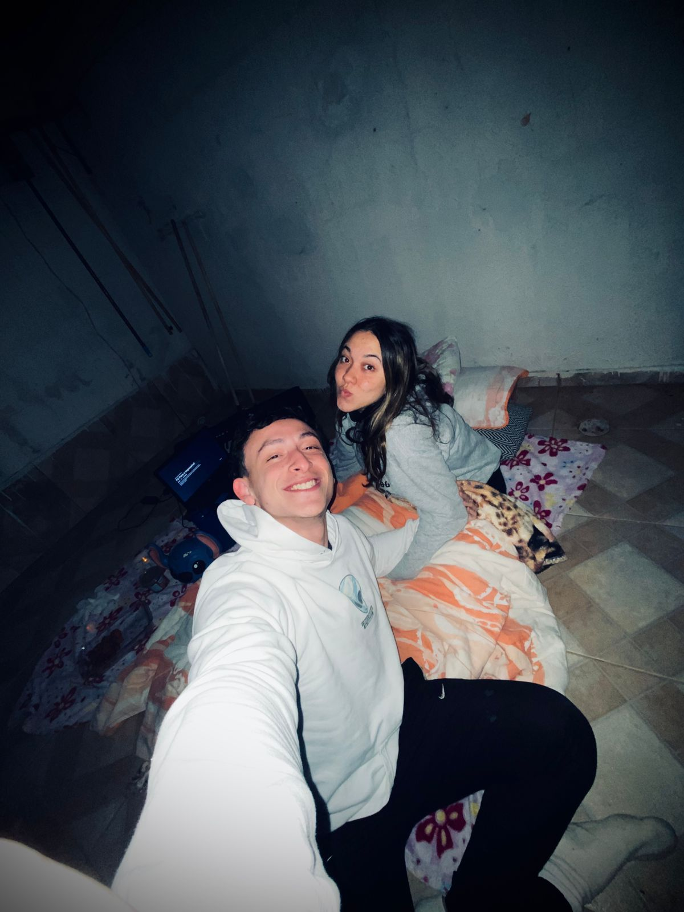
24/06/2025 - Dia 42
Boom dia meu amor, tudo bem?
Dormiu bem?
Descansou nesse feriado?
Que horas você foi dormir ontem meu neném?
Eu to com saudade, queria ficar juntinho com você
Esse fim de semana agora a gente nem ficou junto direito por conta do acampdentro e tals, eu to com tanta saudade amor
Ontem foi tao bom, é maravilhoso passar esses momentos com você, é sensacional cada segundo ao seu lado meu amor, eu te amo mais que tudo!
Eu vou te amar pro resto da minha vida meu amor.
To sentindo falta dos seus boa noite, ou sei lá, você escrever algo pra mim..
Mas eu sempre vou estar aqui escrevendo, pq eu te amo mais que tudo meu amor, e espero que cada mensagem que esteja aqui, melhore pelo menos 1% do seu dia..
Eu te amo mais que tudo, eu te admiro meu amor, você é a mulher da minha vida, logo logo você vai ser minha esposa.
Eu te amo meu neném, eu te amo muito mais do que você pode imaginar meu amor!
To aqui no serviço e assistindo Super Onze, cresci vendo essa serie, mo nostalgia, já vi ela umas 800x, é mt top KKKKKKKKKK
Em falar nisso, que dia chato af, queria tanto estar em casa nesse feriado, nesse frio..
Hoje pra vir, mds, quase cai minhas mãos, quase chorei de dor nos dedos, misericórdia.
Ontem fomos pra prudente, e eu mal vejo a hora de irmos pra tantos lugares, porém, com meu carro, sem precisar depender de ninguém.
Eu quero te levar pra cada lugar, quero passear com você, quero conhecer lugares com você.
você é a mulher da minha vida meu amor.
Eu te amo.
Você é a mulher mais linda do planeta.
Eu vou me casar com você logo logo.
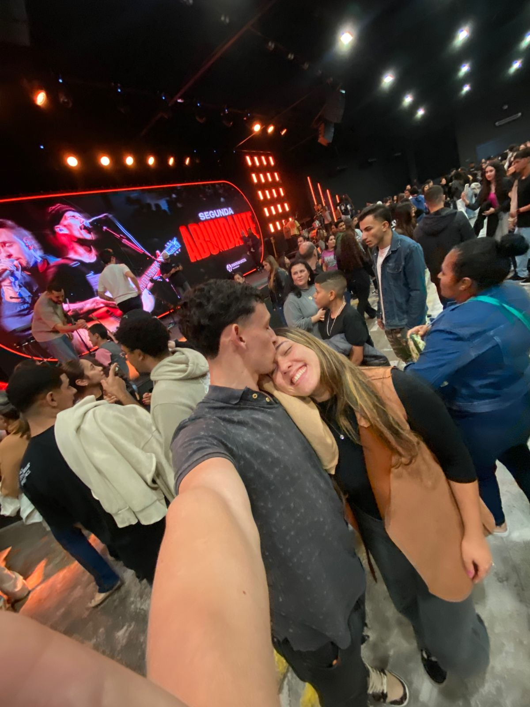
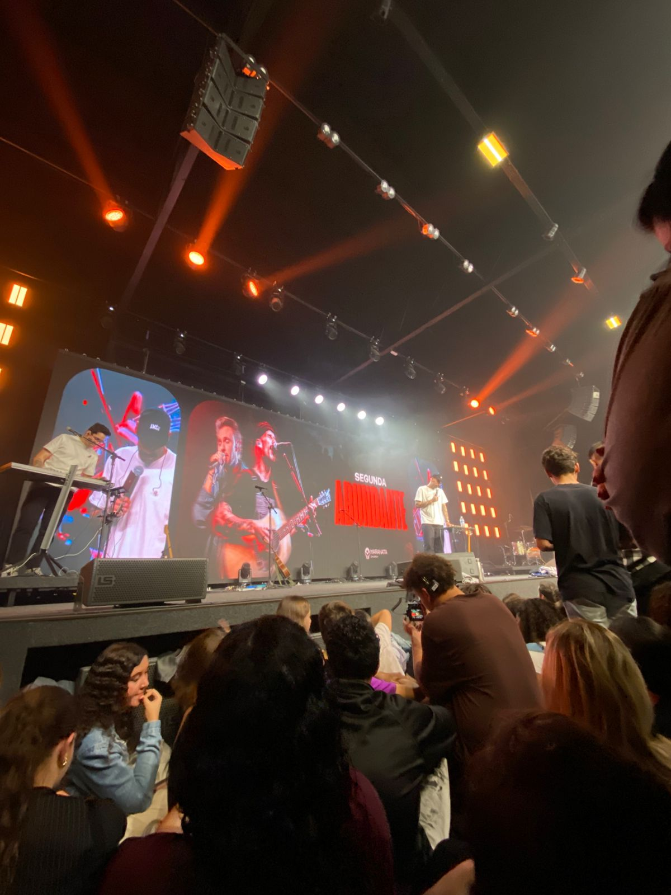
23/06/2025 - Dia 41
Booom dia meu neném, como você está?
Hoje tem show do DROPS hehe, só eu e você, juntinhos, eu te amo mais que tudo cara
Esse é apenas mais um dos milhares de momentos que vamos criar juntos
Só mais uma memoria de varias que ainda vamos fazer.
Eu te amo mais que tudo meu neném.
Meu neném, você tava a coisa mais linda do mundo ontem, eu amo aquela roupa em você, você fica sensacional com qualquer roupa meu amor.
Eu nem sei com qual roupa você vai hoje, mas eu tenho certeza de que você vai estar linda, sensacional, fenomenal, uma princesa, ou melhor, a minha princesa.
Eu te amooooooo!!!!!!!
Sério, que preguiça de trabalhar hoje, ainda é 09h44, queria que fosse 15:14 já
Tenho que esperar o marketing liberar meu acesso na Meta do Facebook agora, pra poder criar os negócios que o Diego quer, ai vou ter coisa pra fazer em, já da dor de cabeça so de pensar, af.
Enfim, meu amor, você é e sempre vai ser a minha menina, torço pra que você se torne a mulher mais madura e vitoriosa do mundo, porém, sempre que eu te olhar, vou enxergar aquela menina que eu fui pedir pros pais, com o olhar brilhando, sem saber o que iria acontecer, mas querendo viver cada segundo.
Eu te amo pra sempre minha pequena.
Você merece todas as palavras, letras, frases, linhas, colunas, mas principalmente, corações.
Sabe, ainda não sei o que eu fiz exatamente pra ter te chateado, mas enfim, eu te amo mais que tudo.
Queria poder saber o que fiz pra poder consertar, pq eu odeio ficar desse jeito com você..
você é a mulher da minha vida meu amor, eu te amo mais que tudo, tudo que envolve você, eu sou fascinado..
Você é a garota mais linda do mundo, a menina mais incrível desse planeta, eu sou totalmente apaixonado em você.
Eu amo cada segundo com você, cada momento, cada culto, cada the best, cada rua que passamos..
Porém, está acabando isso de so andar apé, logo logo vou comprar meu carro e vamos passear por ai, eu te amo mais que tudo e quero passar essa conquista com você.
Você vai ser a primeira pessoa que vai andar comigo nele, eu te amo mais que tudo.
Já to vendo luzinhas pra colocar no seu espelho, pq você é quem vai andar comigo pra todo lado, é você que vai estar comigo a todo momento.
Eu te amo meu amor, você é a mulher da minha vida.
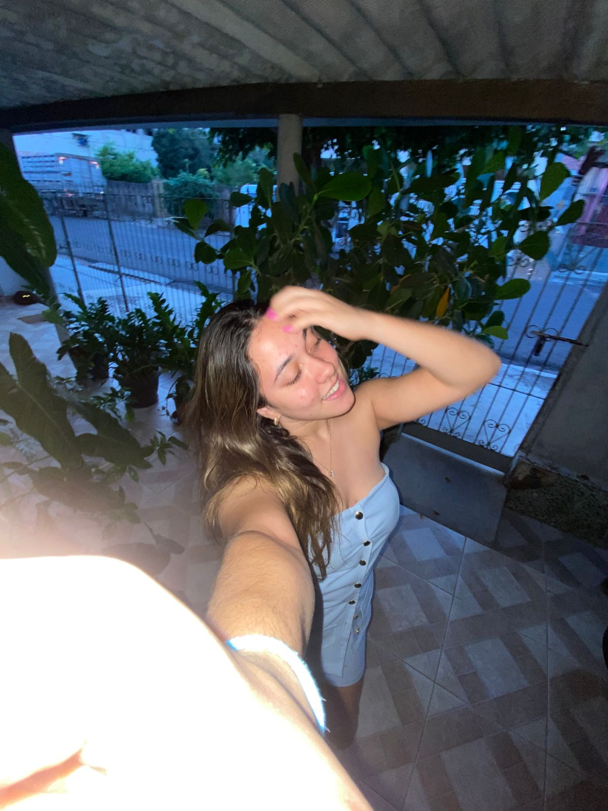
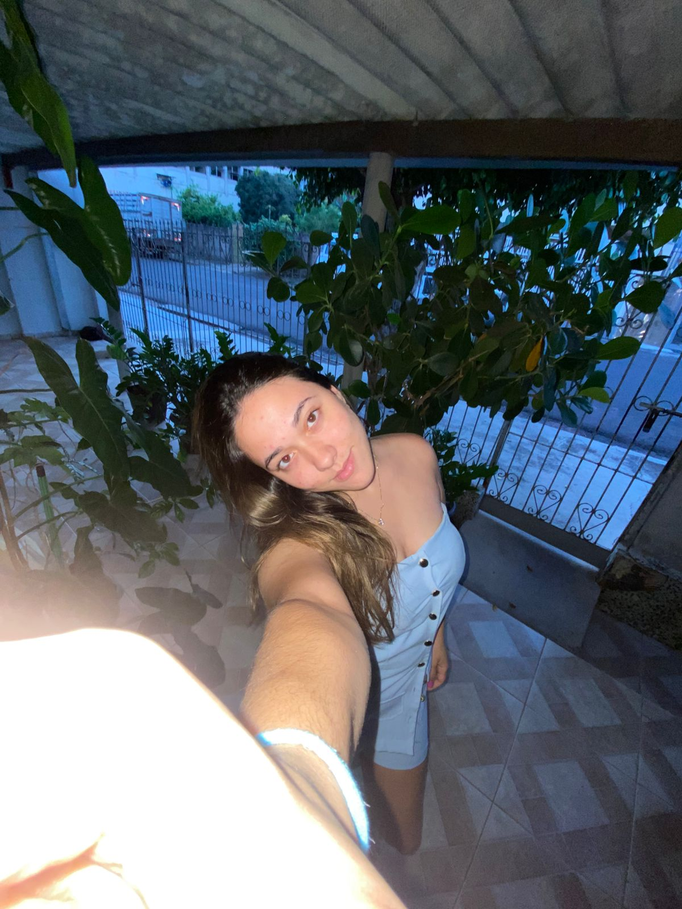
21/06/2025 - Dia 39
Ooooolá meu amorzinho, como você tá?
Meu neném, você é a mulher da minha vida.
Eu te olho a todo momento, e cada vez mais eu me apaixono meu amor, você é o amor da minha vida cara, você é a menina que eu sempre sonhei, você é a garota em quem eu quero cuidar pro resto da minha vida, é você quem eu quero amar pro resto da vida.
Eu te amo meu amor
Cada dia que eu acordo e posso ver que você é minha, eu me sinto a pessoa mais feliz do mundo, você é tudo pra mim meu amor.
Eu amo seus olhos, seus cabelos, seu corpo, sua risada, seu beijo, seu abraço, seu toque, tudo em você, eu sou fascinado meu amor.
Eu te amo às 03h da madrugada, às 10h da manhã, às 03 da tarde ou às 21h da noite.
Independente da hora ou momento, eu te amo mais que tudo.
Mais um fim de semana onde eu posso te chamar de minha, mas infelizmente ainda não somos casados ):.
Mal vejo a hora de poder te ter pra vida toda, mal posso esperar pra te chamar de minha esposa, você é a mulher da minha vida.
Eu te amo mais que tudo, você é a mulher dos meus sonhos.
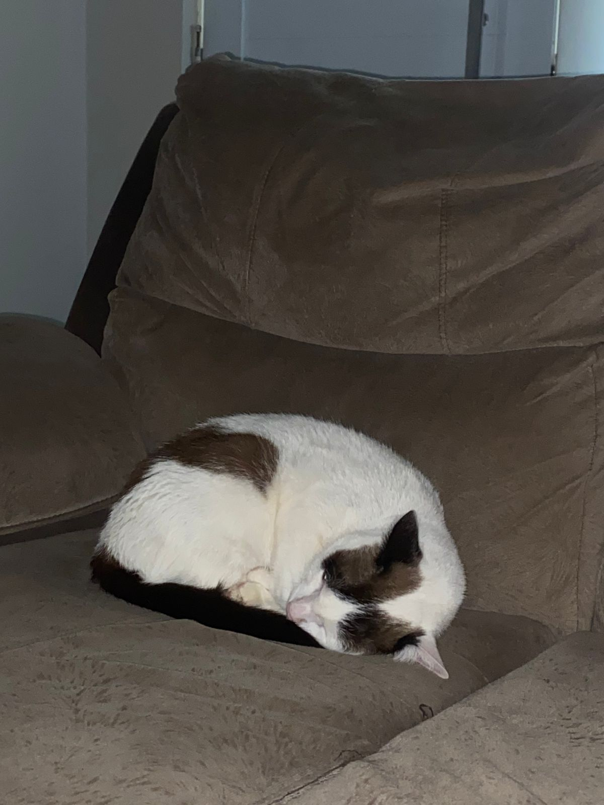
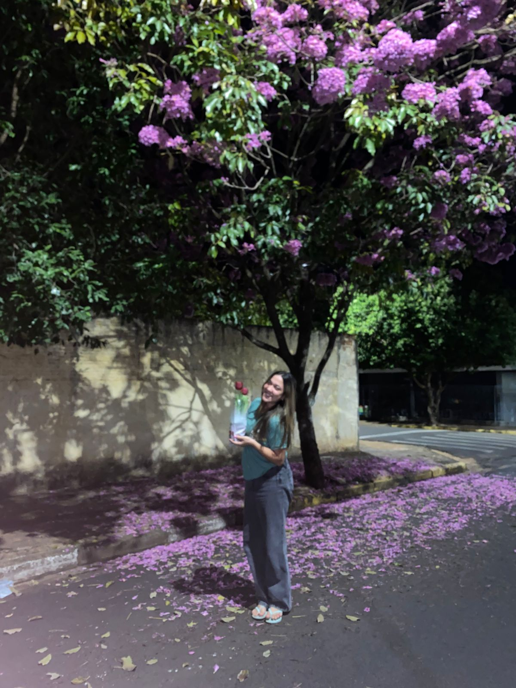
20/06/2025 - Dia 38
Booom dia meu amor, como você tá?
Espero que esteja bem, dormindo tranquila meu amor
Atrasei hoje, fui descansar uns minutinhos e capotei dnv, acordei quase 8:50 vey KKKKKKK
ai fui tomar banho correndo, me arrumei correndo, peguei meu copo e vim, sai de casa 08:59, cheguei aqui 09:09 KKKKKKKKKKKK
E af, so pq a Mari voltou, semana passada ela tava de férias, ai não tinha nada atrasar uns minutos
Mor, eu te amo muito, muito mesmo, você é o amor da minha vida!
Você é a minha princesa meu amor, a dona do meu coração.
Eu sou louco por você, eu sou todo bobo, eu fico fascinado em você, e esse site é a prova disso, já estamos em quase 40 dias seguidos aqui.
Já falei isso antes, mas é verdade, as vezes não estou de bom humor, estou cansado, as vezes a gente briga, não to "feliz" e tals, mas mesmo assim, estou aqui escrevendo todos os dias pra você, tentando ser melhor cada dia, deixando meu ego de lado e dedicando um tempo pra dizer o quanto eu te amo.
você é o amor da minha vida meu amor, eu sempre vou me esforçar por você, eu sempre vou tentar por você, eu sempre vou dar meu máximo meu amor, pq você é a minha princesa hoje e pra sempre
Quero que saiba o quanto importante você é pra mim, o quanto você é linda, o quanto você é uma garota fenomenal, você é perfeita, maravilhosa, encantadora, você é sensacional meu amor!
eu te amo meu amor.
te amo desde 2021, 2022, 2023, 2024, 2025 e vou te amar pro resto da minha vida meu amor, até 2000 e sempre.
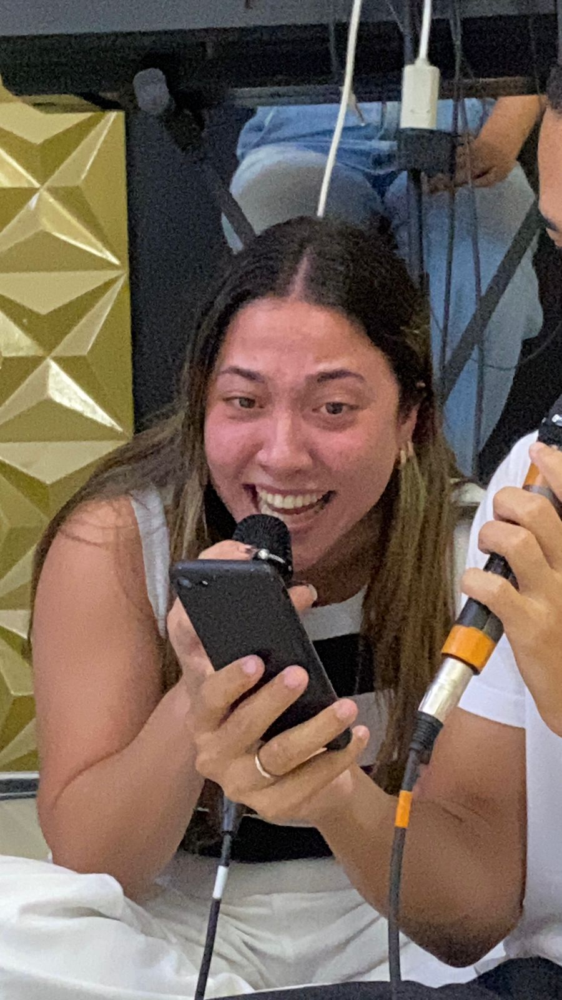
19/06/2025 - Dia 37
booa tarde meu amor, tudo bem?
feriadou, quintou, dormi até 14h quase, que delicia, precisava disso em
imagina qnd estivermos casados e ficarmos juntos o dia todo assim, que delicia
to fazendo seu churros agora, 4 receitas, 1 caixa de leite foi embora KKKKKKKKK
eu te amo meu amor, faço tudo por você meu amor.
Vai ficar uma delicia, queria comer tbm af, ainda mais com doce de leite ):
To indo no mercado agora, pq acabou a farinha de trigo e a massa ainda ta mole demaissss
Boa, fui no mercadinho da sua aluna la, tava fechado, fui no econômico e koike ta fechado tbm.
Fui na Bruna Conveniência e não tem farinha de trigo, ai achei so no econômico do lado da arca de noe lá..
Tudo isso apé em, mais de meia hora andando
Me valoriza em
to acabando agora, mds, não aguento mais bater massa KKKKKKKKKKKK
Mor, eu te amo mais que tudo meu amor, você é o amor da minha vida!
eu amo cada segundo ao seu lado, amo cada momento ao seu lado amor, eu sou fascinado em você, eu te amo muito meu neném!
eu amo quando você é carinhosa, amorosa, amo ficar abraçado com você, agarradinho, amo te beijar, te abraçar, amo tudo com você meu amor!
espero que goste dos churros, pq serio, deu trabalho em KKKKK
eu te amo meu amor, você é a minha neném, você é a minha menina pra sempre!
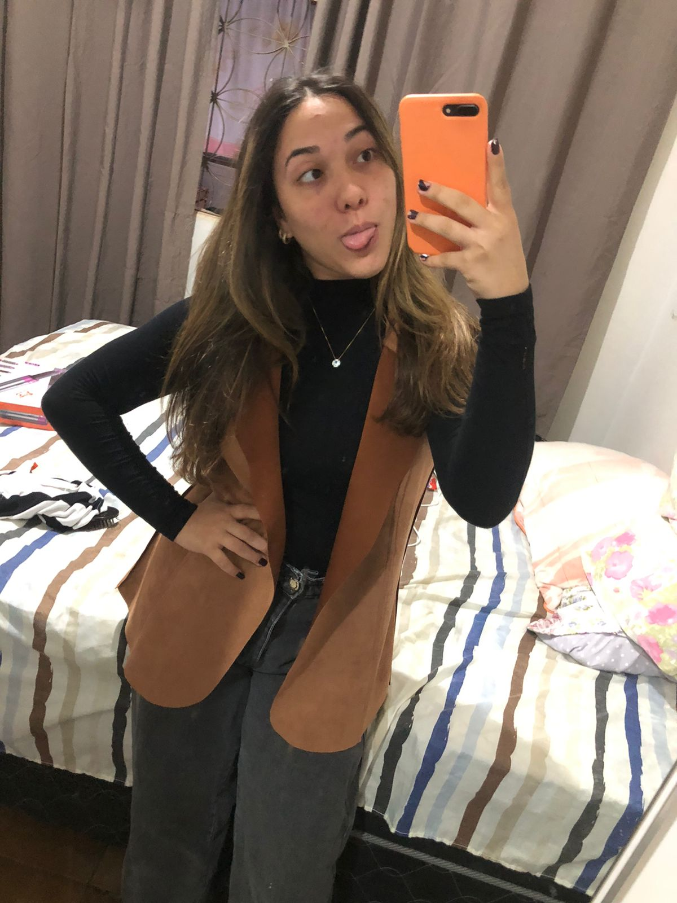
18/06/2025 - Dia 36
Bomm dia meu neném, tudo bem?
Espero eu seu dia esteja sendo ótimo meu amor, você é o amor da minha vida, eu te amo mais que tudo meu amor.
eu to morrendo de saudade de ficar juntinho logo, esse fim de semana nem vai dar ):
Eu te amo meu neném, eu te amo muito mesmo!
Sextou pra você, porém, pra mim, tem 2 sexta essa semana ):
So queria ter feriado emendado uma vez, ultima vez foi na escola KKKKK
To com saudade meu amor, muita saudade mesmo, eu te amo, amo ficar com você, amo ficar agarrado com você, amo ficar grudadinho cara, você é tudo pra mim
Queria ser casado com você, pra nunca mais sentir saudade, ficar agarrado todo dia, toda noite, toda manha, seria meu sonho mds
Eu quero casar com você, e eu vou casar com você, eu prometo meu amor.
Você é a mulher da minha vida e é você que eu quero ver no altar, você é quem eu quero ver como mae dos meus filhos, até pq, se não for você, nem faz sentido ter tudo isso.
Você é a mulher da minha vida, ainda vou dar a melhor vida do mundo pra nós.
Eu te amo meu amor, eu te amo, eu te amo, eu te amo, eu te amo!
eu tenho muito orgulho de você, de quem você é, de quem era, de quem esta se tornando, você me enche de orgulho amor!
Eu te amo meu neném!
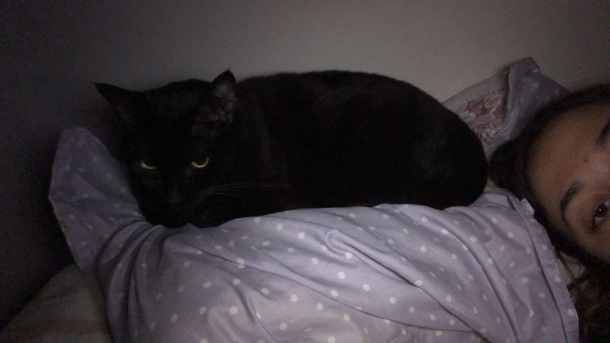
Quem sabe um dia eu recebo algo (:
17/06/2025 - Dia 35
Olá meu amorzão, como ta o meu neném?
Meu amor, quase não consigo escrever hoje aqui no serviço, to mt ocupado com uns negócios aqui, ainda mais que a Mari e o Diego tao aqui.
So to conseguindo escrever agora pq eles tao na salinha conversando e eu dei uma pausa aqui
To tentando criar um ngc na IA que ela de sugestões dos próximos passos pro usuário, mas ta tenso aqui
Mor, eu te amo mais que tudo, você sabe disso ne?
Eu quero me casar com você meu neném, eu quero viver com você pra sempre.
Meu amor, você é o amor da minha vida, tudo o que eu sinto por você, eu nunca senti antes, e isso é obvio.
Você tem o meu coração por completo, eu me entrego pra você sem medo algum.
E quero que você sinta essa segurança comigo também meu amor.
Eu estou aqui pra cuidar de você e é isso que eu quero fazer pro resto da minha vida meu neném.
Quero te impressionar com surpresas, com presentes, com abraços, qualquer coisa, so quero te impressionar meu amor.
Você é a mulher da minha vida, dona do meu coração por completo.
Eu te amo mais que tudo meu amor, e por mais que eu tente, nunca vou conseguir expressar tudo isso.
Mas né, eu continuo escrevendo aqui todos os dias, quem sabe assim, eu consiga demonstrar um pouco.
Mas eu não quero que fique so em palavras amor, eu quero viver isso tudo com você.
Tudo que eu escrevo aqui, eu quero viver com você.
Sei que tenho minhas falhas, assim como você as suas tbm, mas eu to disposto a melhorar por você cada dia meu amor.
To disposto a cuidar de você pelo resto da vida,
To disposto a chegar em casa e te abraçar todos os dias da minha vida.
Eu te amo mais que tudo minha princesa, você é a mulher da minha vida!
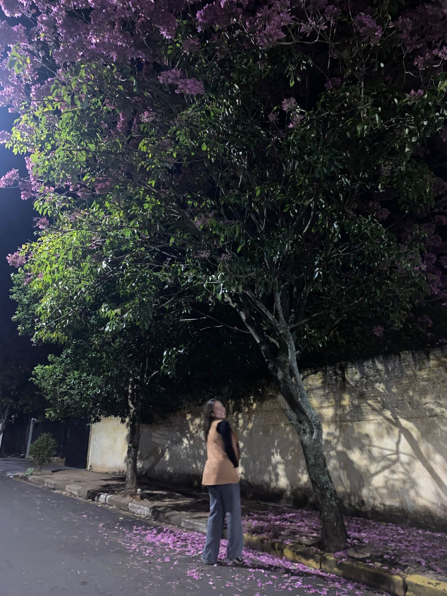
16/06/2025 - Dia 34
Booooom diaaaa meu amor!!!
Como você está?
Segundou ):
Meu amor, espero que esteja tendo um dia ótimo meu neném, espero que esteja sendo tudo uma paz ai no seu serviço.
eu te amo meu amorzinho, to com saudade já.
Você é a mulher da minha vida, nunca vou me cansar de dizer isso..
Bom, já que você já topou Maringá né, eu vou fazer uma programação bem dahora pra gente heh
Por mais que a gente vá com o Samuel e a Monique juntos, vai ter momentos que vai ser eu e você, então vou organizar tudo, vai ser incrível hehehehehehhehee
Eu te amo minha pequena, você é o amor da minha vida toda!
to com saudade de você meu amor, saudade de ficar juntinho, de ficar agarradinho com você meu neném..
você é a dona do meu coração, você estava linda ontem no culto, sensacional, você é perfeita demais meu amor, eu te amo!
Eu te amo mais que tudo!
To animado pra Maringá KKKKKKKK, quero ir logo, quero criar muitos momentos com você meu amor, muito mesmo KKKKKKK
Eu te amo minha princesa, eu ainda vou me casar com você, você ainda vai ser minha noiva, minha esposa, minha veinha caduquinha, e eu te vou te amar independente do tempo ou idade.
Eu vou te amar pelo resto da minha vida meu neném, até o fim, sempre será eu e você meu amor.
Eu te amo mais que tudo.
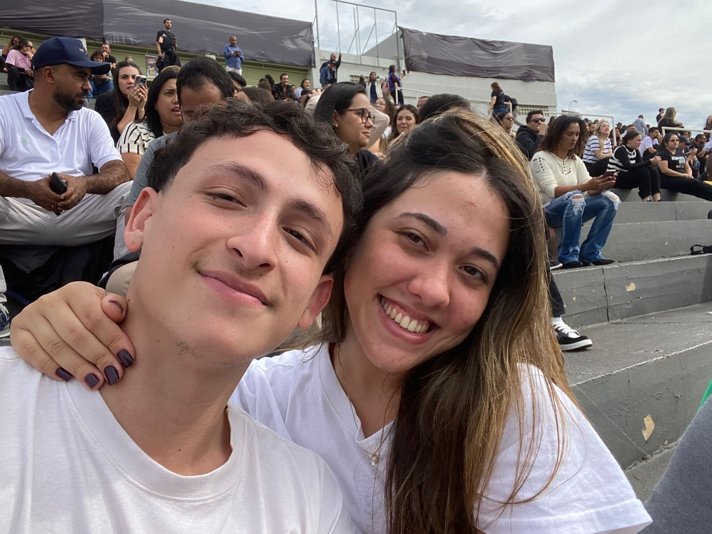
15/06/2025 - Dia 33
Boa noite meu momorzinho, eu te amo!
Já chegamos de Maringá ): e vamos dormir agora, porém, mais uma noite separados ):
Eu to cansado disso amor, quero casar com você logo minha princesa, eu te amo mais que tudo.
Maringá foi incrível, foi incrível passar esse momento com você, foi incrível andar pelas ruas de maringa com você novamente, foi incrível cada segundo com você meu amor
Tudo com você é sensacional, eu te amo mais que tudo minha futura noiva
Você é o amor da minha vida branquela!
Temos que viajar pra lá em Novembro, vai dar certo, vou levar meu ticket com 2 meses, vai dar 1250 em ticket, ou seja, da pra comer em qualquer lugar praticamente, fora que passa em mercado e no shopping inteiro praticamente, inclusive no the best hehe
Quero criar essas memorias com você meu amor, quero criar esses momentos com você.
Vou estar com meu carro até lá, então vamos poder viajar no meu carro pela primeira vez, vai ser incrível meu amor.
Eu te amo mais que tudo minha pitica, você é a mulher da minha vida, eu quero casar com você.
Eu quero ficar com você pro resto da vida meu amor.
Eu prometo ainda te dar muitas rosas, girassóis e principalmente, tulipas meu amor.
você é o amor da minha vida minha princesa.
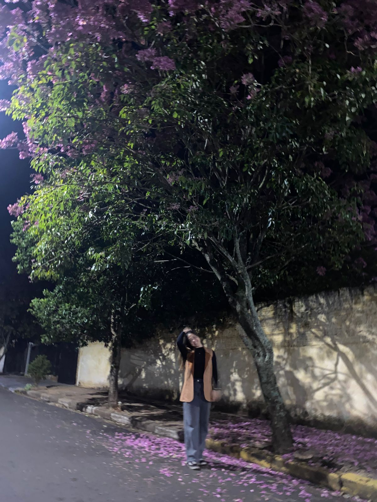
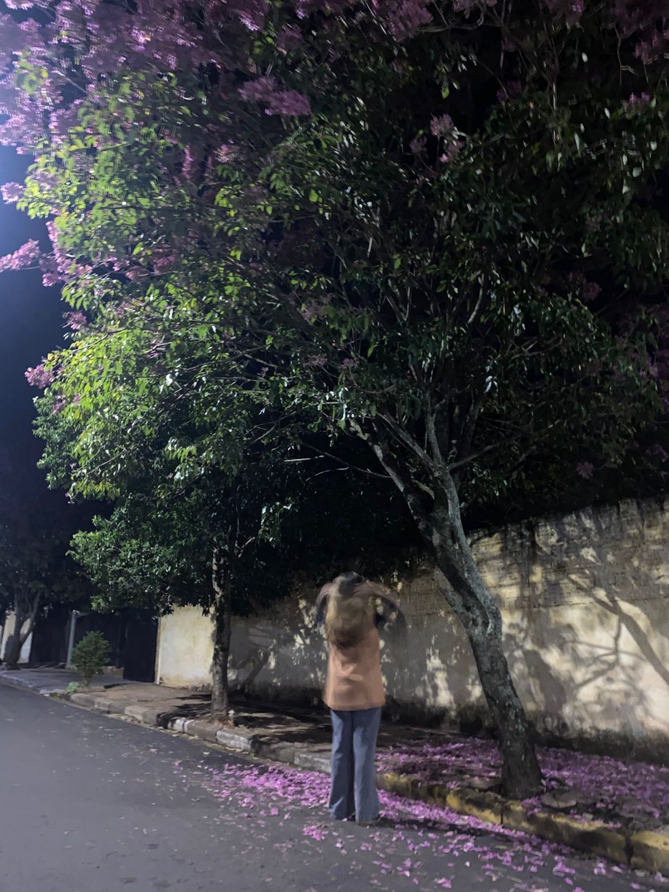
Feliz dia 15 pra nós meu amor!
14/06/2025 - Dia 32
Olá meu amor, você é o amor da minha vida toda
Eu te amo mais que tudo, você é o amor da minha vida
Acabamos de chegar no estádio e você está no banheiro tentando fazer coco KKKKKKKK
Meu amor, estamos em Maringá mais uma vez, vamos voltar em Novembro, porém, eu quero morar aqui com voce
Quero viver com você aqui meu amor, quero construir uma vida com você, quero criar uma historia com você meu neném.
Você é a minha princesa pra sempre, eu te amo mais que tudo, cada memoria criada com você, é sensacional!
Você é o amor da minha vida meu amor, não tem nada que eu queira mais que casar com você meu neném.
Eu não consigo pensar em outra coisa que não seja casar com você o quanto antes.
Quero viver com você logo meu amor, quero ir pra nossa casa, não é atoa que eu fico vendo apartamento alugando toda hora, imaginando nossa vida sendo instalada lá, no nosso cantinho, onde vai ser so nosso..
Eu te amo minha princesa, eu te amo minha menina!
Essa cidade é linda demais ta doido, precisamos morar aqui, so consigo imaginar a gente andando de bicicleta, fazendo caminhada e todo o resto, eu te amo muito meu amor KKKKKKKKKKKK
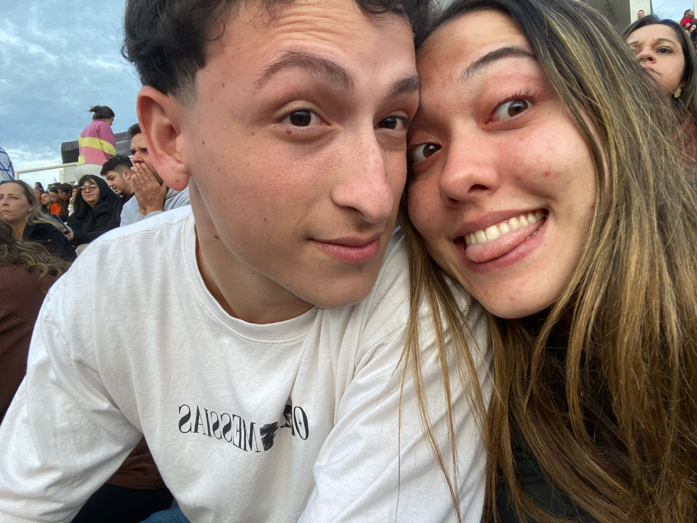
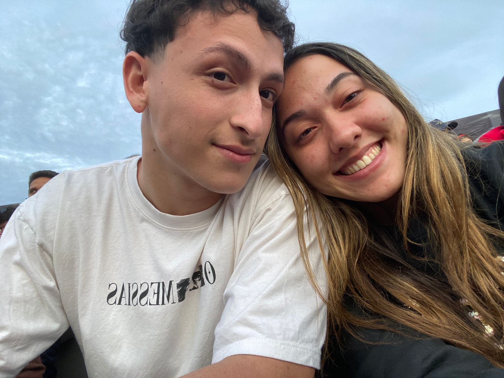
13/06/2025 - Dia 31
❤️🩹
oi meu amor, como você está?
espero que esteja bem, de verdade mesmo
meu amor, de verdade, eu não sei o que eu to fazendo de errado ultimamente, pq eu tenho tentado acertar em tudo..
Ontem acordei com você me dizendo que fiz o melhor dia da sua vida e fui dormir escutando que metade das coisas é culpa minha..
Não sei o que eu fiz exatamente, pq 15 minutos antes de vc dormir vc tava dizendo que me amava, ai falou da flor e de repente começou a brigar comigo..
Mas enfim meu amor, se eu to fazendo algo errado, vem e me fala, pq eu to tentando fazer tudo certo, esse site é a prova disso.. eu escrevo todos os dias, estando feliz ou triste, estando animado ou cansado, estando bem ou chateado, sempre estou aqui..
Se isso for cansaço de outras coisas, eu te perdoo, to aqui pra cuidar de você, é só isso que eu quero, quero tomar conta de você, quero cuidar de você igual um neném..
Mas eu preciso que você me deixe cuidar meu amor..
Você não precisa ficar guardando tudo pra si meu neném..
Eu to aqui com você pra tudo, pro que der e vier, e até pra o que não der, eu sempre vou estar aqui.
Eu te amo mais que tudo meu neném, você é a minha princesa, e eu quero cuidar da minha princesa meu neném.
Maringá vai dar certo, amanha a gente vai sim, pode ter certeza amor, vai dar tudo certo, relaxa..
Não sei o que aconteceu, mas vai dar certo.
Logo logo a gente ta casado e essas "dores" vao sumir, vou cuidar de você todos os dias pessoalmente, te abraçando, um mimo..
Eu te amo minha pequena, quero que veja que eu so quero cuidar de você meu amor.
EU te amo mais que tudo, você é o amor da minha vida, você é a garota mais linda do mundo.
Queria sair hoje ao invés de quarta, se a gente soubesse que não teria a oração hoje ne, seria mt mais legal, pq a gnt ia ficar junto dps..
Mas a gente fica junto hoje, até de madrugada, até a hora de dormir pra amanha ir viajar.
Eu te amo minha menina, você é o amor da minha vida.
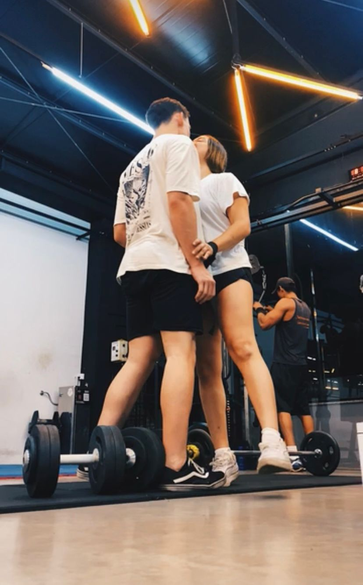
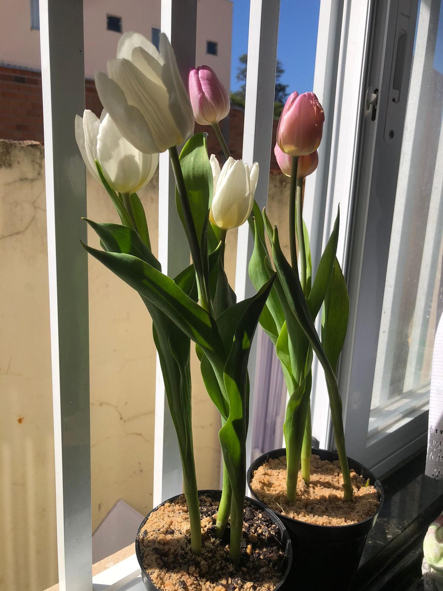
12/06/2025 - Dia 30
Feliz dia dos namorados!
Bom dia minha princesa
Como você está?
Ta com muito sono pitoca?
Ah meu amor, o que falar de você?
O que falar pra você?
O que falar sobre você?
Eu te amo mais que tudo minha pitica, você é tudo pra mim, eu te amo mais que tudo nesse mundo!
Você é a mulher da minha vida, eu nunca vou me cansar disso.
Bom, eu ia falar que esperava ter feito seu dia um pouco melhor ontem, mas você mesma disse que eu arrasei no presente e fiz o melhor dia da sua vida, então acho que consegui hehe
Eu te amo minha pitoca, você é o meu maior sonho, você é o meu mundo
Você é minha eterna namorada, mas em um futuro breve, será minha noiva, e mais ainda, minha esposa.
Mal vejo a hora de fazer essas surpresas e no fim do dia irmos para nossa casinha meu amor
Eu te amo mais que tudo nesse planeta minha princesa, você é a minha vida toda!
To louco pra chegar amanha e ficar com você até de madrugada, agarradinho com voce
Acho que eu mereço um pouco de carinho né hihi
Eu te amo minha menina, você é quem faz os meus dias melhores, e todas vezes que eu tenho você comigo, são os melhores dias da minha vida
Eu amei o meu presente, amei a surpresa, amei tudo!
A camisa ficou mt boa em mim, o quadro eu achei incrível, a cartinha do homem aranha.
você é tudo pra mim meu neném, eu sou loucamente apaixonado por você, intensamente fascinado em você!
E eu ainda tenho muitas surpresas pra te fazer, então, acho que você vai ter que ficar comigo por um longo tempo, quem sabe até o fim da vida eu consiga fazer todas
Você é a mulher da minha vida, você é a minha mulher!
Eu te amo mais que tudo, eu amo seus olhos, eu amo seu rosto, eu amo seu cabelo, eu amo seus braços, eu amo suas risadas, eu amo suas brincadeiras, eu amo até quando você fica brava, eu amo e sou loucamente apaixonado no seu corpo, que é a coisa mais linda desse planeta. Você é a poesia mais linda que a vida já cantou, você é a obra mais linda que Deus já pintou.
Você é o amor da minha vida meu amor, acho que nunca vou conseguir expressar tudo o que sinto, assim como você nunca vai conseguir entender o quanto eu te amo.
Mas, eu tento mostrar um pouco disso todo dia.
Eu te amo meu amor, você é sensacional, você é incrível!
Saiba que você merece tudo isso
E eu prometo que em breve, quando as condições melhorarem, vou fazer surpresas ainda melhores.
Eu te amo meu amor!
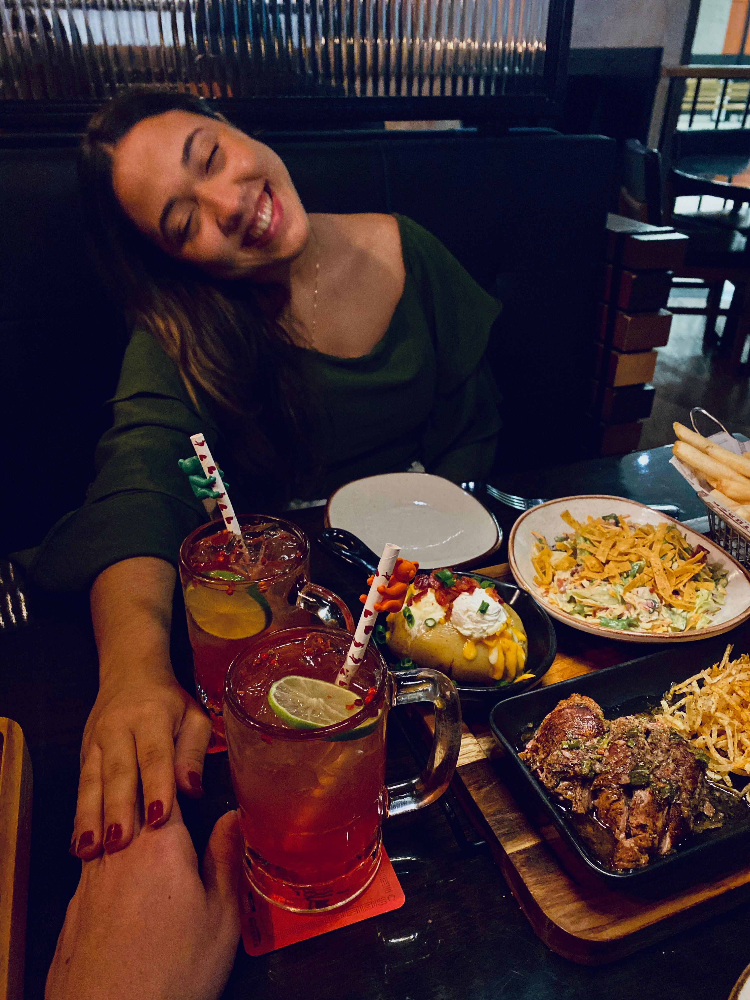
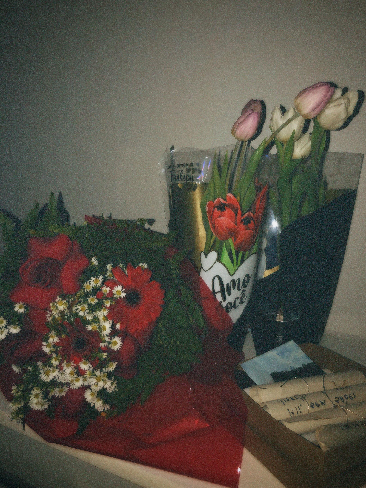
Feliz dia dos namorados meu amor!
11/06/2025 - Dia 29
Boom dia meu amorzinho, tudo bem?
Como você está meu amor?
Minha princesa, eu to ansioso pra te ver hoje, pra gente passear, sair, comemorar
Eu queria mt que hoje fosse sexta pra gente ficar juntos depois ):
Mas fazer o que né, é a vida né..
Mas logo logo isso vai mudar, logo logo vamos estar na nossa casa amor
Eu te amo mais que tudo minha pitica, eu quero mt te abraçar, te beijar, te agarrar meu amor
Espero que goste do seu presente hoje, to fazendo com muito carinho rs
Eu te amo minha pitica, você é minha neném pra sempre, independente da idade, independente do tempo, você sempre vai ser o meu neném.
Eu acordo todo dia pensando em você meu amor, eu penso em você a todo segundo meu amor
Queria que você me mandasse alguma coisa tbm (:
Mas enfim, eu sempre vou estar aqui deixando uma mensagem, mesmo cansado, ocupado ou etc..
Até porque vale a pena por você meu amor, vale muito a pena.
Como eu falei, esse site vai durar pra sempre, seja namorando, seja noivado, seja casado, seja velhinhos, sempre vai estar aqui.
Hoje estamos na carta 28, mas ainda vamos chegar na 100, 500, 1000, 10000 e infinitas cartas, até o ultimo dia da minha vida
So não sei como esse site vai aguentar, pq já tem mais de 3 mil linhas escritas KKKKKKKKKKKKKKKK
Mas vai ser pra sempre meu amor, sempre sempre sempre
Eu te amo muito meu neném, você é minha vida, você é TUDO pra mim!!!
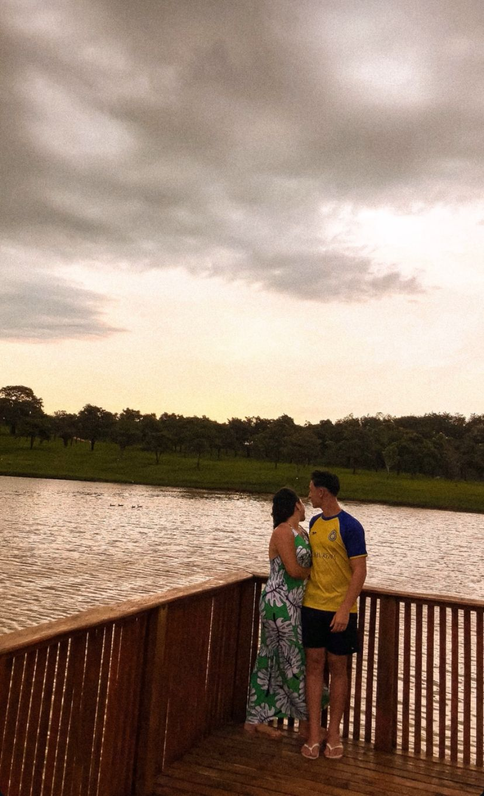
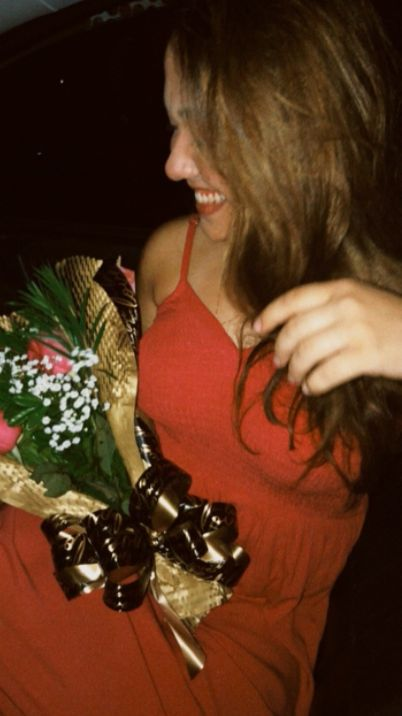
10/06/2025 - Dia 28
Boa noite minha pitica, como você tá?
Não consegui escrever durante o dia hoje por conta que essa semana ta sendo uma loucura no serviço, to fazendo mt coisa
Preciso resolver essa questão do Zendesk até amanha, pq é o teste grátis, dps disso seria cobrado..
Mor, eu te amo muito minha pitoca, você é o amor da minha vida.
Amanha vamos comemorar o dia dos namorados, e eu amo tanto isso, amo tanto o fato de ter você, amo tanto o fato de você ser minha meu amor
Eu sou o homem mais feliz do mundo so de ter você do lado meu amor
To ansioso pra amanha logo,
Ansioso pra chegar sexta logo e ficar junto com você.
Você é a dona do meu coração
Você é a mulher mais linda do mundo, você é encantadora, você é perfeita, você é incrível, seus olhos, sua boca, seu cabelo e claro, esse seu corpo fantástico que me deixa bobo
Eu te amo meu amor, você é tudo pra mim!
Minha certeza todo dia é que eu quero me casar com você meu amor, eu quero muito isso.
Quero muito viver com você pra sempre meu amor.
Eu poderia escrever mil cartas, mesmo assim, não seria possível descrever quanto eu te amo, o quanto você significa pra mim meu amor.
Você é o amor da minha vida e pra minha vida.
Eu amo cada segundo ao seu lado.
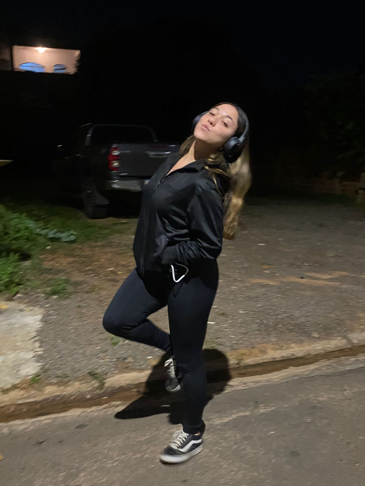
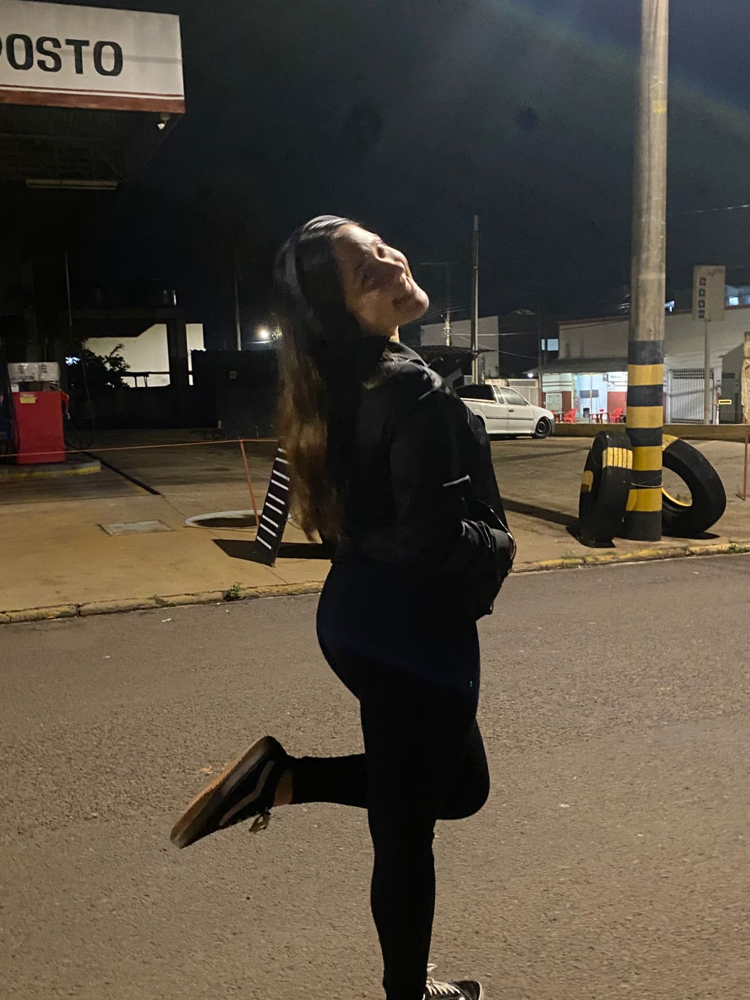
09/06/2025 - Dia 27
Bom dia meu amor, tudo bem?
Minha princesa, eu to morrendo de saudade já, mds, eu preciso casar com você logo meu amor, não consigo ficar longe de você mais
Minha princesa, eu te amo mais que tudo!
Ta chegando o dia dos namorados, e seu presente vai ser fofo, você vai gostar (eu espero)
Eu amo passar essa data com você, amo muito mesmo, amo cada data com você
Você é o amor da minha vida, você é tudo pra mim meu amor
Eu te amo mais que tudo pitica
Sinto sua falta todo segundo, so queria tirar férias e ficar o tempo todo agarrado com você deitadinho e agarradinho
Eu te amo meu amor!!!
Mor, eu não consigo parar de pensar em você, serio mesmo, eu quero mt casar com você meu amor, não é brincadeira.
Posso até ser repetitivo nisso, mas eu quero mt mesmo casar com você, eu quero viver com você, morar com você, quero criar uma vida toda com você meu amor.
Não aguento mais me despedir de você, não aguento mais ter que voltar pra minha cada e você pra sua, eu quero que a gente va pra nossa casa no fim do dia.
quero que depois do culto a gente pegue o carro e va pra nossa casinha, jante e deite pra dormir juntinhos, eu quero muto mesmo
Você é o amor da minha vida minha princesa.
To fazendo a integração do Zendesk com a Blip aqui no serviço e na Max procurando algo pra assistir 😎
Quero ir embora, to mo cansado hoje, mo preguiça af
Única maneira de descansar, seria agarrado com você mesmo ):
Eu te amo minha menina!
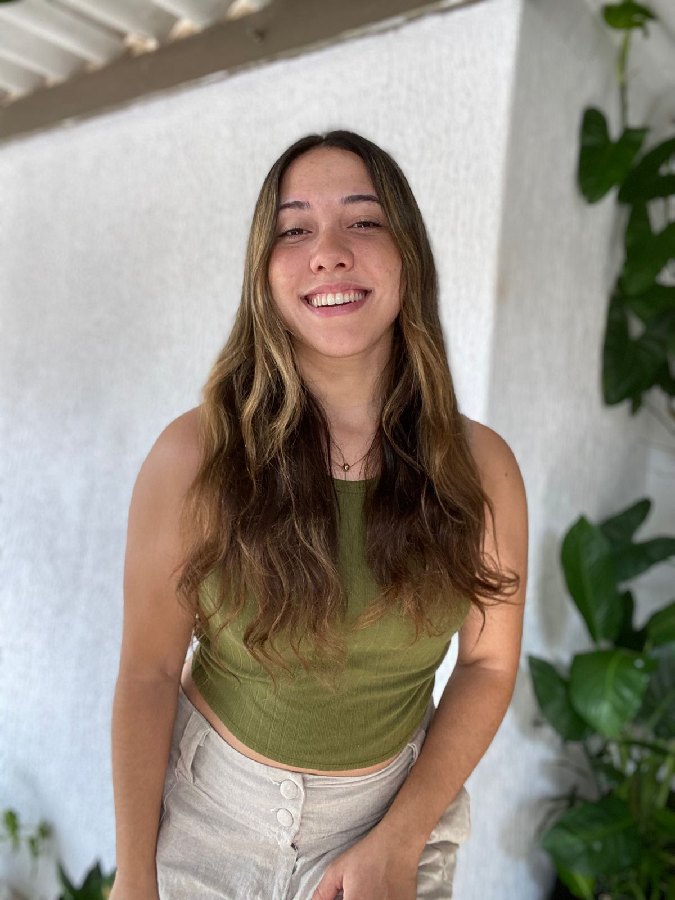
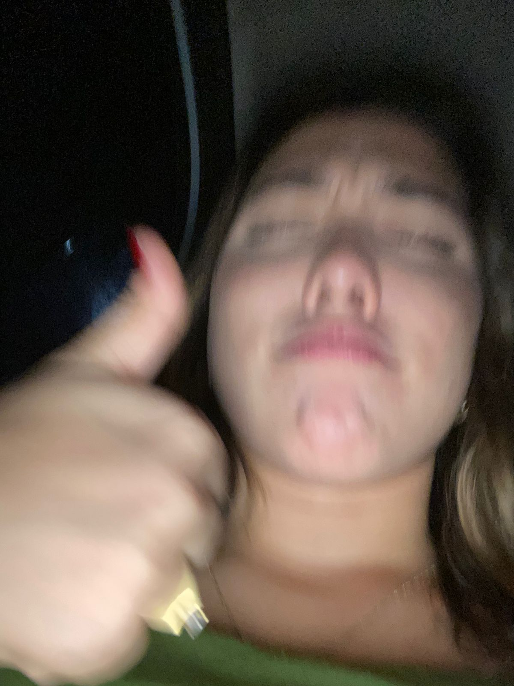
08/06/2025 - Dia 26
Olá meu amor, tudo bem?
Finalizamos mais um domingo, e a cada dia que passa eu tenho mais certeza que te amo mais que tudo!
Como eu falei na ultima carta, eu amo ficar deitado com você, amo ficar com você, amo sentir seu cheiro, seu abraço, seu beijo, tudo em você me fascina meu amor
Eu sou loucamente apaixonado por você meu amor, eu fico bobo qnd te olho, eu fico mais bobo ainda qnd vc me olha
eu te amo minha princesa
Você é o meu mundo, você é a minha vida toda!
Eu não sei o que eu seria sem você, não sei como seria minha vida sem o seu sorriso meu amor
Eu quero casar com você, quero mudar pra nossa casa logo, quero comprar nossas coisas, quero ficar com você todos os dias, dormir com você todos os dias meu amor
Você é o meu passado, presente e futuro, não tem nada que eu pense que você não esteja envolvida.
Se eu penso no meu futuro, eu so vejo você, se eu penso no meu presente, eu so vejo você, e se eu penso no meu passado, você está la também.
Eu te amo minha pitica, casa comigo logo, você é tudo pra mim meu amor.
Você é e sempre vai ser minha pitica, independente de ter 16, 19 ou 70 anos, você sempre vai ser minha pitica
Eu te amo meu amor.
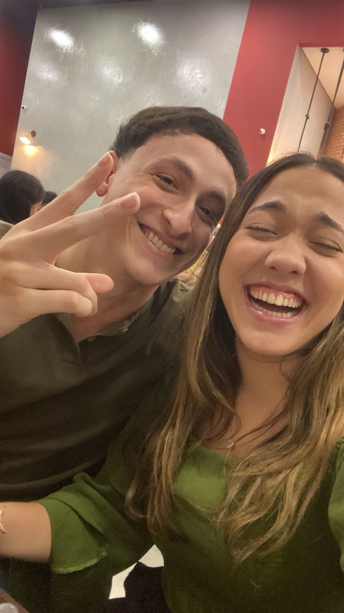
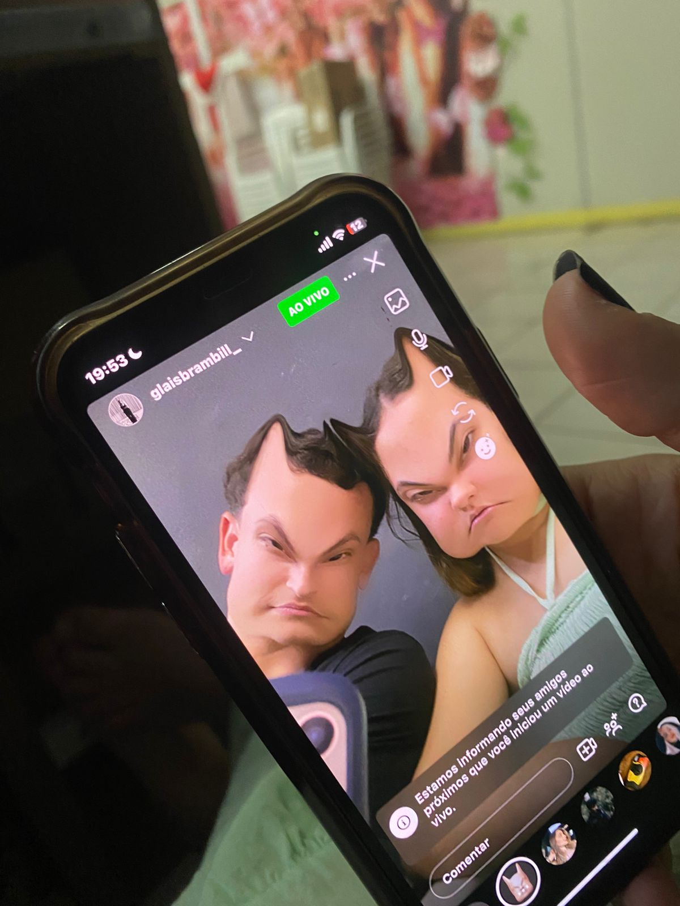
07/06/2025 - Dia 25
Oooi meu amor, tudo bem?
Minha princesa, eu te amo mais que tudo nesse mundo, você é a minha menina, minha pequena, minha garotinha, eu te amo pro resto da minha vida!
To voltando da sua casa agora e pensando em como eu te amo
Em como eu amo o seu toque, seu beijo, seu cheiro, eu amo te sentir, eu amo ter você por perto
Meu amor, você me causa as melhores coisas desse mundo, eu te amo mais que tudo!
Eu amo ficar deitado com você, nos dois juntinhos na cama, com você deitada no meu peito e eu assistindo HP, eu te amooooo!!
E serio, to gostando até do filme, achei dahora agora q eu to "assistindo prestando atenção", sabe?
Ta legal mesmo, assisti tudo, prestei atenção em tudo
Você é o amor da minha vida!
Hoje vamos assistir o 2 ainda, to ansioso pra assistir logo, pra ficar com você logo, eu te amo mais que tudo!
---------------------------------
Boooa tardeee, que preguiçaa mds
Queria ficar com você, mas você ta fazendo o trabalho e a unha, mas eu quero tanto ficar agarrado com você dnv mds
Eu te amo meu amor, te amo mais que tudo nesse mundo minha princesa, você é a mulher da minha vida!
Te vi ontem de noite, mas to morrendo de saudadeee, eu te amooo!!
A vida é mt boa com você, não sei como é viver sem você, não quero saber, quero viver com você pra sempre meu amor!
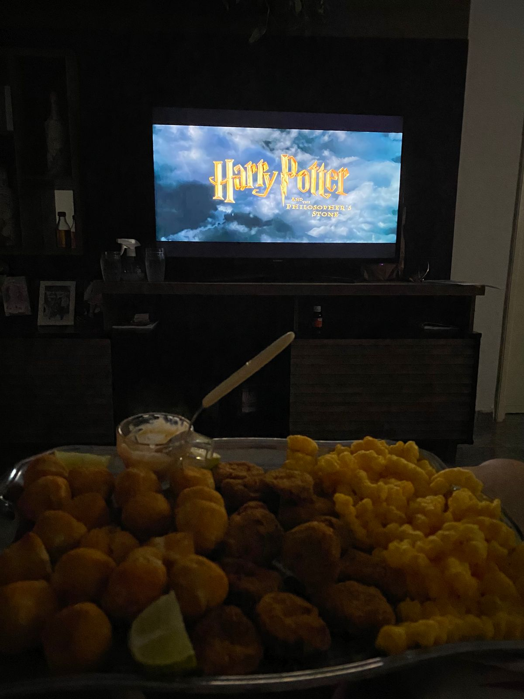
06/06/2025 - Dia 24
Olá meu amorzinho, tudo bem?
momorzinho, eu to estourando de dor de cabeça, mds do céu
essa semana foi dura em, trabalhei demias demais demais, desenvolvi tanta coisa cara, to caindo de sono
To tendo que fazer mil e uma coisa diferente pra dar certo
Estudando pra caramba documentação oficial da Meta pra poder saber como fazer
Estudando documentação da Blip pra ver como fazer tbm
Serio mesmo, to exausto vey, difícil demais demais demais
Mas, graças a Deus que hoje é sexta, vou poder te ver, ficar colado com você, ficar juntinho, to com tanta saudade meu amor
Eu te amo mais que tudo, to morrendo de saudade, não vejo a hora de não precisar mais esperar chegar sexta pra ter que matar saudade, mas sim, poder ter isso todos os dias, é o meu maior sonho meu amor
Eu te amo meu neném
Tenho a programação pra hoje, prometo que vai gostar meu amor, eu te amo mais que tudo!
Slk, meu teclado tava ficando enferrujado, eu apertava e ele fazia um barulhinho ne, ai peguei um novinho aqui que chegou esse mês, slkkkk, to digitando igual o flash, 500 letra por segundo, mt melhor, mao ate desliza
Mor, você é a mulher da minha vida, você é meu tudo, minha princesa, minha pequena, minha menina
Anteontem que eu postei sua foto no story, eu fui ver meu histórico de story ne, ai achei nossas primeiras fotos, e cara, que incrível é ver que a gente cresceu tanto vey
Tipo, a gente era mo criança qnd começou a namorar, tao novinhos, nem imaginava que ia passar por tanta coisa, 4 anos juntos quase, e cara, mesmo que a gente ainda seja "novo", a gente já viveu tanta coisa, já criamos tanta coisa, serio, você é tudo pra mim!
Eu nunca imaginei viver isso na minha vida, mas serio, é incrível cada segundo com você meu amor
E eu quero construir muito mais coisa ainda, quero viajar com você, quero casar com você, quero te pedir em casamento logoooo
Quero viver com você meu amor, eu te amo!
Essas coisas que eu to criando no serviço, são coisas BEM mais avançadas, tipo, coisas que o pessoal de PP cria, por isso q ta tao dificil
Diego chegou a perguntar se eu queria que mandasse a demanda pro pessoal de PP, mas eu falei que não, que eu vou fazer
Querendo ou não, ganho reconhecimento dele e até do pessoal de PP, pq o diego tem contato direto com eles
Assim, quem sabe até o fim do ano, ou ano que vem eu já subo pra la..
Fora isso, também to estudando mt aqui, fazendo curso e tals, pra poder aumentar meu currículo e etc..
Assim, se eu não subir pra PP, eu arrumo outra vaga tbm, ganhando melhor e tals
Tudo isso por nos meu amor, pra poder ter condições logo, graças a Deus minha profissão me permite que eu esteja ganhando uns 5/6k daqui um ano ou um ano e meio, é meio que logico isso, tipo, é "impossível" eu ficar parado no mesmo cargo que eu to hoje
Quero muito tudo isso, pra poder casar com você logo, quero viver com você logo meu amor.
Eu te amo minha princesa!
Eu te amo minha futura esposa!
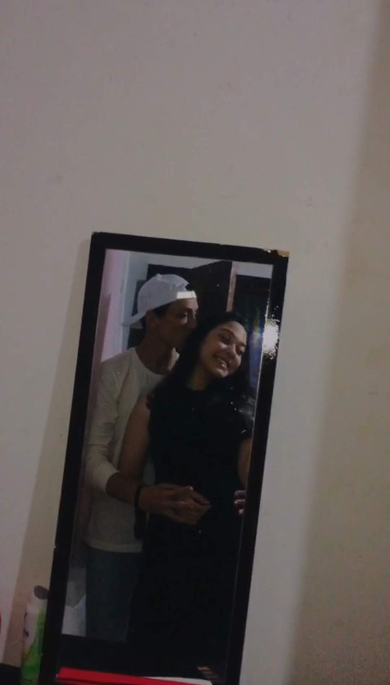
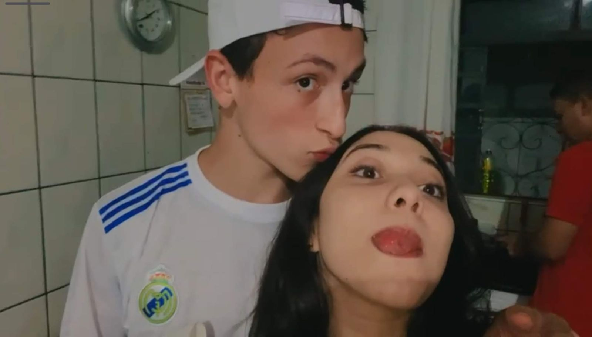
r
Eu prometo pra você que em breve você vai ser minha esposa.
05/06/2025 - Dia 23
Meu neném
Eu te amo mais que tudo.
Você é o amor da minha vida
Quero que se lembre disso pra sempre meu amor.
Até pq, é real.
Eu te amo até o ultimo dia da minha vida, você é a mulher da minha vida meu amor, você é meu mundo.
Você é a pessoa mais incrível que eu já conheci, você é a melhor pessoa que eu já conheci, e ainda que eu conhecesse o mundo todo, você ainda estaria ocupando este posto.
Eu te admiro meu amor, eu te acho sensacional, você é perfeita, seu corpo é fenomenal, me deixa todo bobo, eu sonho com ele todo dia.
Seu rosto, seus olhos, seu cabelo, tudo em você, me deixa bobo, fraco, pq eu sou completamente apaixonado por voce
Eu te amo mais que tudo, eu quero casar com você, quero viver pra sempre com você.
Meu amor, saiba que eu sempre vou estar aqui por você, sempre vou estar aqui pra te escutar, pra te abraçar, pra te dar um chocolatinho, sempre sempre sempre meu amor
Você sempre vai estar segura comigo, ok?
Sempre meu amor.
Você nunca vai estar sozinha, eu sempre vou estar aqui meu amor.
Você é forte, você é incrível, mas não tem problema chorar as vezes, é normal, acontece, e é bom chorar amor, precisa chorar as vezes.
Eu sempre vou estar aqui pra enxugar ou so pra escutar seu choro mesmo.
Mas eu sempre
Sempre
Sempre vou estar aqui.
Eu te amo meu amor, eu te amo!
Que você tenha um ótimo dia de trabalho meu neném, to com saudade de você, mt saudade!
Quero ficar com você logo, ainda bem que amanha já é sexta hehe
Eu te amo meu neném!!!!!!!!
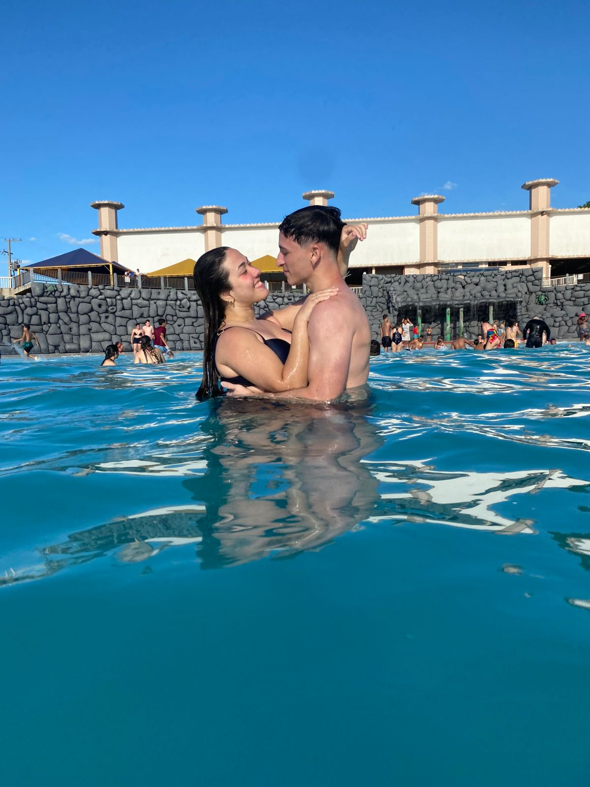
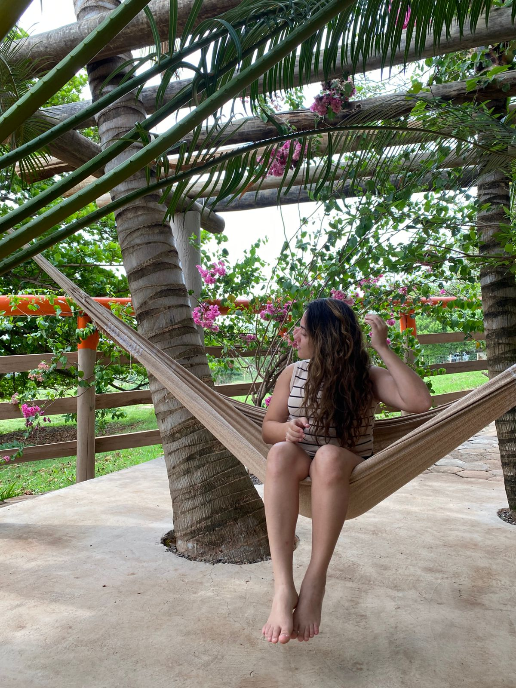
04/06/2025 - Dia 22
boa tarde meu amorzinho
Estou escrevendo so agora por conta que to trabalhando igual doido hoje, mds, já fiz tanta coisa cara.
A IA ta dando certo, consegui manipular as planilhas já, mais de 1k de planilha.
Os Workflows do Diego tbm da começando a dar certo, mas é mt difícil mds
Essa semana ta osso em
Meu amor, como você está?
Espero que tenha sido tudo bem hoje de manha no serviço.
Espero que você almoce de verdade hoje, e não so um salgadinho ou pipoca..
Espero que esteja bem meu amor, eu te amo mais que tudo!
Sei que ai na sua casa ta tenso o clima, todo mundo nervoso e tals, mas não fica estressada, não estoura por isso em, mantem a calma, qualquer coisa me manda msg, desabafa, poe pra fora, sla, mas não fica nervosa não amor, so ignora isso ai, ok?
A culpa não é sua não amor, seus pais tao de tpm um com o outro, não tem nada a ver com você meu amor
Meu amor, quero que saiba que você é a garota mais linda do mundo
Eu te amo mais que tudo meu amor
Não gosto quando você fica falando mal de você, pq cara, se vc pudesse se enxergar como eu te enxergo, você nunca reclamaria dessas coisas.
Como eu falei ontem na celula, eu te admiro, eu te amo mais que tudo nesse mundo
Já fiz a programação pra esse fim de semana
Prometo que você vai gostar hehe
Você é a mulher da minha vida, a mais linda do mundo, você é perfeita, se eu tenho você, eu não preciso de mais nada nesse mundo
Saiba que qualquer coisa, você pode contar comigo meu amor, eu sempre vou estar aqui pra você, sempre, sempre, sempre.
Você é o meu diamante mais precioso, você é a minha vida meu amor.
Eu te amo mais que tudo minha princesa.
Semana ta passando rápido, e quero que passe mais ainda, pra chegar sexta e ficar colado em você, com você deitada em mim, mds, eu te amo mais que tudo meu neném!!
Ainda conto os dias, horas, minutos, segundos pra te ver, eu sempre fico bobo quando te vejo, eu te amo mais que tudo!
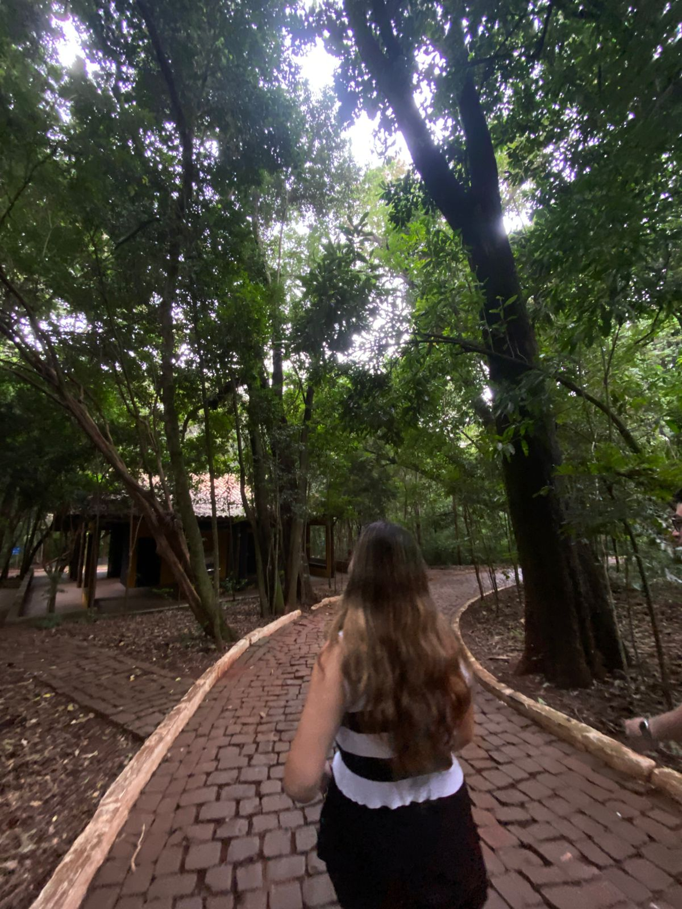
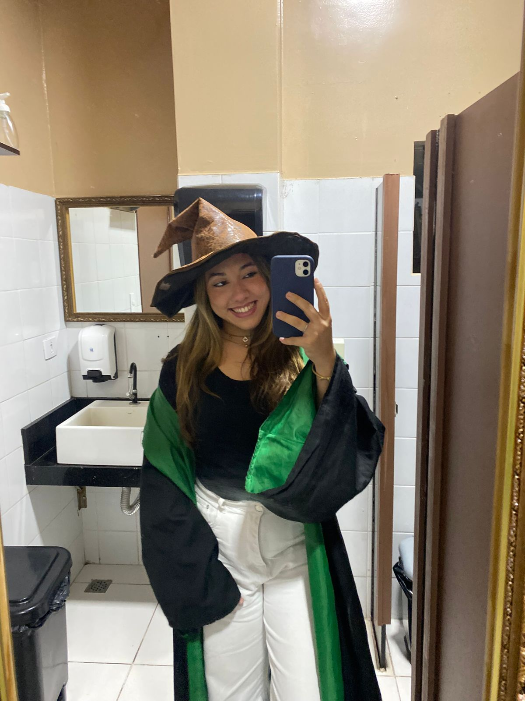
Eu te amo até o fim dos meus dias.
03/06/2025 - Dia 21
Você é o amor da minha vida.
Você é a mulher que eu quero casar.
Você é a única pessoa que eu me vejo no futuro.
Não consigo pensar no futuro e não ter você comigo.
Eu quero me casar com você, quero construir uma historia com você.
Quero envelhecer com você, quero me casar com você e viver pra sempre juntos.
Hoje, sonhei que estávamos casados, na nossa casa, vivendo nossa vida, deitados, vendo filme juntinho e comendo comida japonesa..
Eu quero tanto, eu quero tanto que isso se torne realidade logo.
E vai.
Eu te garanto que vamos nos casar logo logo.
Pensa bem, atualmente eu ganho R$2.500,00 + R$650,00 de ticket e você R$1.300,00
O ticket ficando pra compra, temos R$3.800,00.
Nisso vai:
- R$1.000,00 (Aluguel)
- R$400,00 (Agua e Luz)
- R$100,00 (Internet)
- R$140,00 (Academia pros dois)
- R$400,00 (Imprevistos)
- R$300,00 (Investimentos)
- R$200,00 (Gasolina)
- R$200,00 (Lazer)
- R$500,00 (Faculdade pros dois)
- (Eu estaria pagando carro ainda com uma parcela de uns R$600,00)
E claro, até lá vamos estar melhor, tipo, provavelmente você ainda vai estar como estagiaria no Piaget, mas nos próximos dois anos, é praticamente certeza que eu já vou ter saído da Bevi, ou subir de cargo pra pp, onde o salario é +R$5.000,00
Ou seja, tudo vai dar certo pra gente casar, basta a gente orar pra isso e correr atrás.
Por isso eu quero economizar o máximo agora, assim, a gente já vai ter dinheiro pros moveis e tudo e não vai precisar gastar tanto com isso quando for morar juntos.
Eu quero muito isso, você não tem ideia, eu quero muito mesmo mor, eu quero MUITO casar com você!
Você é a mulher que eu quero como mae dos meus filhos.
Eu não quero so ter filhos, eu quero ter filhos com você.
Quero aprender pratos novos na nossa casa
Quero passear com você e depois voltar pra nossa casa.
Quero acordar do seu lado todos os dias.
Sabe, ficar deitado com você na cama e te beijando, fazendo carinho, olhando no seu olho e etc.. é incrível, mas ao mesmo tempo machuca mt pq eu tenho que me despedir de você..
Eu quero isso pra sempre, não quero dizer "tchau", quero dizer "boa noite"..
Eu quero viver com você meu amor, é isso que eu quero, é isso que eu to me planejando e me preparando, é pra isso.
Eu te amo meu amor, você é a dona do meu coração todo, é você que eu penso a todo momento.
Eu te amo mais que tudo!
02/06/2025 - Dia 20
Bom dia meu amorzinho, tudo bem?
Princesa, to tao ocupado hoje no serviço cara, serio, eu to tendo que fazer:
- Configurar uma IA sozinho
- Criar fluxo novo com integração do Zendesk
- Criar Workflow no Whatsapp
Serio, to enlouquencendo aqui, muita coisa mesmo, mas, graças a Deus ta dando certo, do fluxo com o Zendesk ta dando bom, to esperando o Diego fazer a parte dele agora.
Na da IA, deu bom também o inicio, mas já vi que vou ter que pensar em algo pra dar certo, pq é muita informação..
Mas enfim amor, to com saudade já, quero ficar agarrado com você dnv, quero ficar juntinho, deitado com você no meu peito, ou de conchinha, ou de frente, mds, eu te amo tanto meu amor, eu te amo muito mesmo, quando eu to com você, eu esqueço de tudo, so presto atenção em você, você me fascina, me deixa bobo, me deixa fraco.
Li uma vez que o homem que nunca amou de verdade, não sabe como é se sentir o homem mais forte e mais fraco do mundo ao mesmo tempo, e é a mais pura verdade, pq eu me sinto o homem mais fraco do mundo quando você me beija, me abraça, me faz carinho, eu te amo mais que tudo!
Você é a mulher da minha vida meu amor, você é linda demais, você é quem me causa as melhores sensações possíveis, você me faz sentir coisas que nunca nem pensei que fosse possível, você acelera meu coração so de te ver
Esse fim de semana agora, vou fazer a programação e você vai gostar, i promise.
Eu to louco pra ficar com você dnv meu amor, louco pra ficar deitado com você, ficar fazendo carinho em você, beijando até a boca cair, te abraçando cada vez mais forte, dizer que te amo e tudo mais, pq EU TE AMO!
Você é a mulher da minha vida meu amor, você é tudo pra mim cara, eu sou louco por você!
Quero tanto que 2025 acabe logo pra gente poder casar, noivar e finalmente viver juntos, na nossa casinha amor, no nosso cantinho, é o que eu mais quero cara! Eu te amo mais que tudo!!
Você é a mulher da minha vida, você é a mulher com quem eu quero viver pra sempre, você é a mulher que eu quero que seja a mae dos meus filhos, quero que meus filhos tenha você como mae.
Eu te amo minha futura esposa, eu te amo mais que tudo!
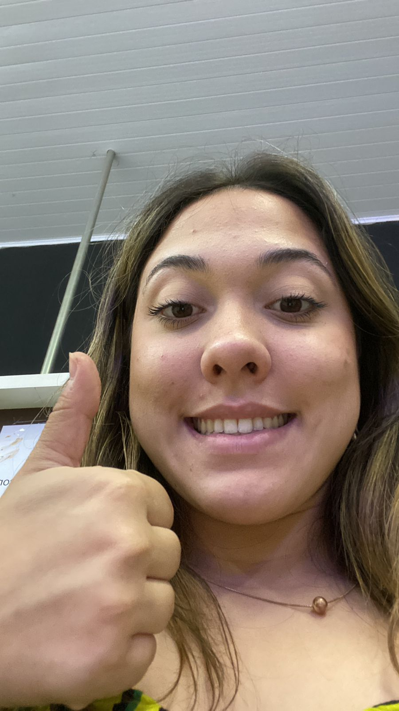
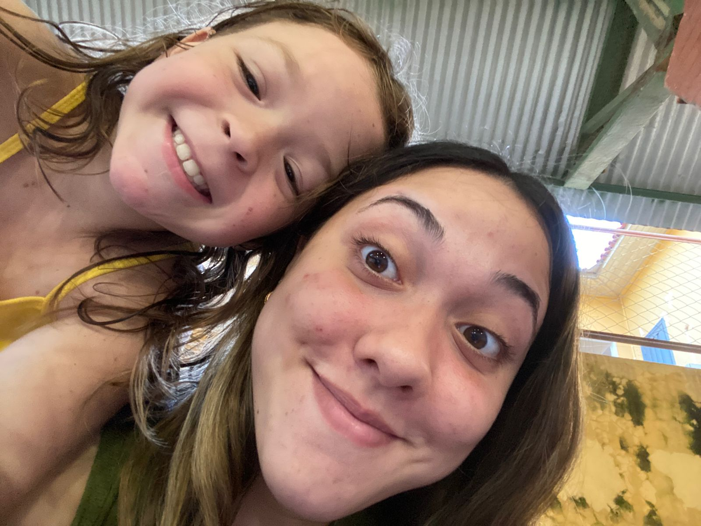
01/06/2025 - Dia 19
Boooa noite minha gata, tudo bem?
Ainda não consegui pegar o notebook do yann, porém, vou escrever mesmo assim!
To voltando pra casa agora, e serio, é horrível ter que me despedir de você meu amor, mas eu vou batalhar todos os dias pra que essas despedidas acabem e nunca mais a gente precise se despedir!
Quero casar com você meu amor, quero viver pra sempre com você!
Quero cuidar de você, quero almoçar na nossa casa no domingo, quero fazer churrasco, quero fazer doce, quero assistir filmes, quero dormir com você pra sempre meu amor!
Quero ir pra nossa casinha logo, comprar nossas coisas logo, quero viver pra sempre meu amor, pra sempre com você!
Quero criar memorias com você, ainda mais nesse friozinho, a gente juntinho debaixo da nossa coberta, sem medo de ninguém aparecer, afinal, é nossa casinha!
Assim, nesse friozinho, a gente vai poder fazer fondue KKKKKKKKKKK
To brincando meu amor (bom, nem tanto ne 🤷🏻)
Mas serio amor, eu quero muito casar com você, quero muito mesmo, quero viver pra toda minha vida com você!
Mal vejo a hora de comprar nosso sofá, nossa cama, nosso guarda-roupa, nossa geladeira, tudo tudo tudo!
Mal vejo a hora de ir visitar nossa possível casa e dizendo "É essa!"
Caramba mor, eu quero muito casar com você meu amor, eu te amo muuuuuuito!
Você é a mulher mais linda do mundo, mais perfeita do mundo, você tava muito linda hoje!
Ah, e você arrasou no louvor hoje, principalmente no louvor do "Por isso eu pulo, pulo, pulo"
Ficou muito bom amor, você arrasa demais!!!
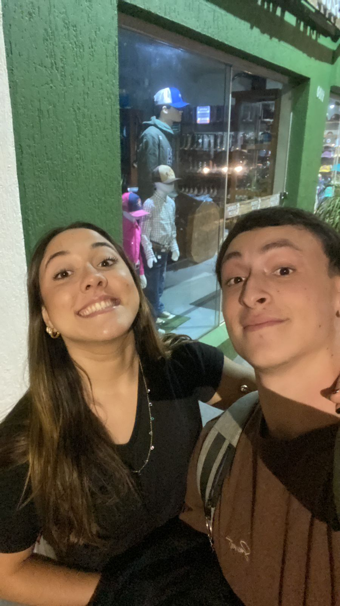
31/05/2025 - Dia 18
Olá meu amor, tudo bem?
Provavelmente não vou conseguir atualizar o site hoje por conta do notebook do yann, porém, vou escrevendo mesmo assim e quando eu conseguir, eu atualizo no site, okay?
Meu amor, quero que saiba que eu te amo muito, cara, hoje foi muito bom, eu amei fazer devocional com você, amei a surpresa que você fez, gostei demais mesmo!
É isso que eu quero, quero fazer isso todos os dias com você, quero viver isso com você, eu quero isso pra minha vida meu amor
Sei que ainda tenho muitas falhas pra corrigir, mas eu quero muito mesmo!
Não te prometo que não vamos ter problemas, mas prometo que sempre terá solução, pq eu quero fazer isso dar certo!
Eu te amo mais que tudo minha princesa, você é a minha varoa mais linda, eu amo escutar você orando, lendo, louvando, amo demais!!!
Mal posso esperar pra fazermos novamente, quero muito isso!
E cara, o que falar de você meu amor?
Eu amo ficar deitado com você, amo ficar agarradinho com você igual ficamos hoje, mds, eu quero tanto casar com você e viver isso todos os dias meu amor, quero tanto tanto tanto!
Você é o meu maior sonho, meu maior desejo, eu te amo mais que tudo minha princesa!
Seu corpo é fenomenal, seu toque, seu cheiro, seu beijo, poder sentir você, poder dormir com você, meu Deus é tao bom!!!!
Eu amo ficar deitado com você, amo muito mesmo!!!!
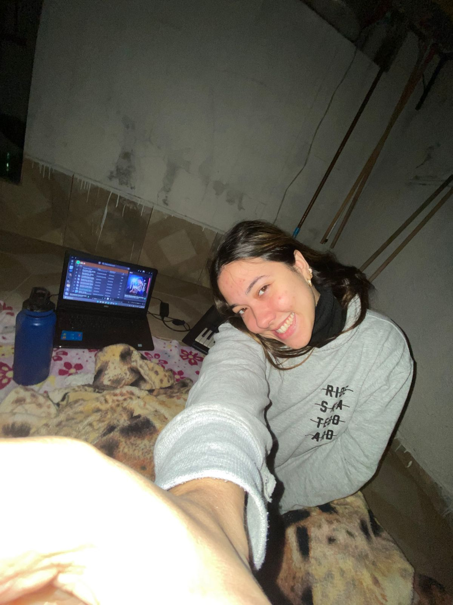
------------------------------------
Oi meu amorzinho, na hora que você estiver lendo isso, você já vai estar melhor, mas eu quero que saiba que eu to orando por você, pra essa cólica passar meu amor, essa dor vai passar e não vai voltar nunca mais.
Fiquei preocupado com você meu amor, te ver chorando de dor é mt ruim, se eu pudesse, passava essa dor toda pra mim, só pra tirar de você meu amor.
Em nome de Jesus meu amor, nunca mais vai doer desse jeito minha princesa.
Graças a Deus você conseguiu dormir agora e eu to aqui, olhando pra você e orando pra Deus tirar essa dor, e claro, admirando o quão linda você é rsrs.
Eu te amo minha princesa, você é tudo pra mim, eu te amo mais que tudo, vou cuidar de você pra sempre meu amor, mesmo que eu não possa arrancar essa dor de você, eu prometo sempre fazer essa dor diminuir pelo menos 1% meu amor.
Eu te amo mais que tudo!
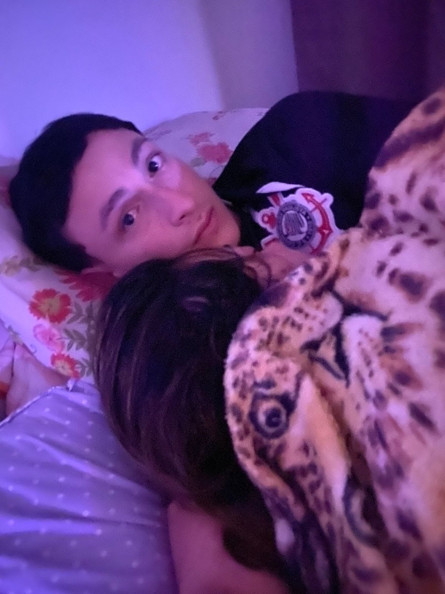
30/05/2025 - Dia 17
bommmm dia minha vida, eu te amoooo!!!
Graças ao bom Deus, sextou!
Hoje é dia de ficar debaixo da coberta com você, ficar agarradinho, se esquentando, comendo um churrinhos e assistindo um filminho nhami nhami
Eu to morrendo de saudadeeeeeee meu momor!
Você é a mulher da minha vida, eu vou te beijar muuuuitao hoje, vou te abraçar muito muito muito
Quero casar com você logo mor, não aguento mais acordar sem você, não aguento mais ir dormir sem você bebe
#SaudadeDoQueAGenteAindaNãoViveu
Eu te amo minha gata, espero que esteja indo tudo bem no serviço, que seu dia esteja sendo abençoado por Deus, e que você esteja bem também..
Espero que a garganta tenha melhorado bastante.
To com saudade meu amor, muita saudade mesmo!
Vou fazer um churros bem gostoso hoje, pq ai, cheguei aqui e todo mundo ficou de boca aberta pro meu churros, slk, manjo muito
Ainda mais agora com o negocio de fazer em estrelinha, você vai amar hehehe
Eu te amo meu amor, quando casarmos, vou fazer docinhos pra você toda vez, vou aprender mais coisas pra te impressionar, pq eu te amoo!!!
Quero tanto casar com você cara, não consigo parar de pensar nisso, mds, você é a mulher da minha vida toda, dona do meu coração inteiro cara!
Eu te amo mais que tudo, você é linda demais, mesmo com a "cara cheia de espinha" e querendo ficar no escuro pra eu não ver, você fica mais linda ainda!
Eu te amo minha princesa, você é tudo pra mim, você é quem me renova, me faz ser melhor, você é quem me motiva, quem me da motivação pra levantar e buscar melhorar 1% cada dia, pq você é tudo pra mim, você é a mulher da minha vida!
CARA, EU QUERO MUITO CASAR COM VOCE LOGOOOOOOO, NAO CONSIGO PARAR DE PENSAR NISSO!!
Quero ir pra gramado com você, pra santa catarina, pra qualquer lugar desse brasil e do mundo com você, quero conhecer todos os cantos do mundo com você, quero viver pra sempre com você!!!!
Eu te amo meu amor, eu te amo mais que tudo, você é mulher mais incrível do planeta, você é sensacional, eu te amo mais que tudo, eu amo a sua voz, o seu cheiro, a sua boca, o seu nariz, seu rosto, seu corpo, sua barriguinha (misericorida, nunca vou me cansar de dizer o quanto eu amo ela), seus olhos, tudo em você, tudo tudo tudo!
EU TE AMOOOO!
Eu garanto pra você que se um dia apagassem minha memoria, eu me apaixonaria por você assim que te visse novamente.
Dizem que quando morre, passa as suas melhores lembranças na mente por 7 minutos, eu garanto que esses 7 minutos seriam com você.
Eu te amo minha garota, minha menina, minha pitica, minha neném, dona da minha vida toda!
CASA COMIGO LOGO!
Ainda esperando receber algo (:
29/05/2025 - Dia 16
bom dia minha pitica, como você está hoje meu amor?
Espero que esteja muito muito muito bem, pq você é o amor da minha vida!
Misericórdia momor que frio de lascar, e pra piorar, não acordei com você do lado dnv ):
Mas isso é por pouco tempo, logo logo a gnt ta na nossa casinha.
Cada domingo que nos despedimos, é um domingo a menos.
Momor, eu quero tanto casar com você vey, tanto tanto tanto.
Quero ficar com você pra sempre mor, eu to morrendo de saudade de ficar colado com você vey
Quero ficar agarrado com você dnv, igual sábado passado..
Tomara que continue frio assim, pq ai a gnt pode ficar juntinho enrolados na coberta hihihihi
Eu te amo mais que tudo meu neném, você e o meu maior tesouro desse mundo, todo dia eu acordo já pensando em você.
Inclusive, hoje eu sonhei com você dnv, na nossa casinha ))::
Quero viver com você pra sempre meu amor, casa comigo logo, por favooooooorrr):
Você é a mulher da minha vida, pra todo sempre, pra toda a vida.
Eu não consigo não pensar em casar com você, em viver cada dia, eu não me vejo casando com outra pessoa, não me vejo nem pensando em outra pessoa, e não que eu queira pensar nisso, mas é pq literalmente na minha cabeça não faz sentido se não for você.
Mas logo logo vamos estar vendo nossa casa, comprando nossos moveis, nossas coisas, arrumando nossa casa, fazendo nossas coisas, nosso futuro hehehe, eu te amo mais que tudo, esse é meu maior sonho.
Eu te amo minha pitica, você é o amor da minha vida, a dona do meu coração.
Sábado tem champions e eu me sinto o homem mais sortudo do mundo por ter você assistindo comigo, serio mesmo, que sorte!
Ah, e pra deixar claro, estamos torcendo pro PSG, ok?
Ou seja, ALLEZ PARIS!
Eu te amo meu amor, você é a minha princesa e eu tenho muito orgulho de você, muito orgulho de quem você é.
Minha professora, minha melhor amiga, minha mulher, minha menina, minha princesa, minha pitica, minha neném, você é tudo que seja meu, afinal, você é todinha minha!
Eu te amo meu amor, mais que tudo, não consigo imaginar um dia sem você, pelo contrario, consigo imaginar todos os dias com você.
Eu te amo!
Só lembrando, você também pode se declarar agora, dizer que me ama e tals
Eu gosto muito também (:
Essa aqui é pra você, eu te amo princesa!
28/05/2025 - Dia 15
bom dia meu amorzinho, como você está?
minha princesa, acordei hoje querendo tanto ficar com você nesse friozinho ):
queria tanto você abraçada em mim agora, deitadinho com você, até o fim do dia, sem nem levantar da cama, só um chocolate quente, nhami nhami
princesa, eu te amo mais que tudo cara, e vou falar dnv, mas serio, imagina como vai ser na nossa casinha quando tiver esse climinha aaaaaaaa, eu quero tanto isso!
Quero tanto viver com você meu amor, so penso nisso a cada dia que passa!
Você é o amor da minha vida minha pitica, eu te amo mais que tudo nesse mundo, você é o amor da minha vida toda!
Não consigo imaginar um dia se quer sem você na minha vida, sem te ouvir, sem te sentir, sem ver seu sorrisinho..
A gente vai casar, e eu te prometo duas coisas:
1- Eu vou te fazer a garota mais feliz do mundo.
2- Eu vou beijar e fazer carinho na sua barriguinha todos os dias da minha vida.
EU TE AMOOOOOOOOOOOOO!!!!!!!
Você é a dona do meu coração meu amor, ontem você tava tao linda de pijama, você fica linda de qualquer forma, de qualquer roupa, de qualquer jeito, você fica maravilhosa!
Você é a garota mais linda do mundo, mais incrível do planeta!
Eu não paro de pensar em você nem por um segundo.
Eu quero me casar com você, eu quero ficar com você pro resto da vida, pra todo sempre meu amor!
Você é o meu primeiro pensamento e o ultimo também, não é atoa que a primeira coisa que eu faço quando chego aqui, é escrever uma cartinha pra você e pensar em algo pra te impressionar..
Eu não sei o que eu tenho, mas serio, eu não consigo parar de pensar por um segundo como vai ser quando a gente casar, eu quero TANTO casar com você logo meu amor
Se Deus quiser, logo logo isso se torna realidade!
Eu quero acordar ao seu lado, quero dormir ao seu lado, quero levantar e deitar ao seu lado, quero assistir filme com você na nossa casa, quero fazer comida com você, quero fazer compras, eu falei isso ontem, mas é verdade, eu quero tanto fazer compra pra nossa casa mds, tanto tanto tanto!
Quero criar tradições pra gente, não so quando nossos filhos nascerem, mas quando for so nos dois, e depois nos dois e um gato, nos dois, um gato e um dog, nos dois, um gato, um dog e um nenezinho, até que venha o outro nenê também..
Mas uma coisa é fato, você sempre vai ser o meu neném nº1.
E isso eles vao ter que aceitar por bem ou por mal..
Eu te amo mais que tudo minha princesa, você é tudo pra mim, você e muito importante pra mim, muito mesmo!
Eu te admiro, te desejo, te anseio, eu te quero pra toda a minha vidaaaaaaaa!
EU TE AMO MEU AMOR!
Agora você também pode deixar uma mensagem pra mim heheheheheh..
Eu te amo mais que tudo, a sua voz é a poesia mais linda que eu ja ouvi.
27/05/2025 - Dia 14
Bom dia minha princesa, tudo bem?
Momor, eu acordei com tanta saudade hoje, saudade do seu cheirinho, de ficar agarradinho com você..
Quero tanto que chegue sexta logo pra gente ficar juntinho..
Amor, eu te amo mais que tudo, e por mais que em toda carta eu fale isso, eu nunca vou me cansar, pq você e o amor da minha vida toda cara.
você não tem ideia do quanto eu te amo, do quanto eu te desejo, do quanto eu te quero, do quanto eu fico bobo so de pensar em você..
Ontem mesmo, voltando da academia, eu passei pela Quero-quero e vi os eletrodomesticos que tem la e tals ne, cara, eu vim o caminho todo pensando em como vai ser quando for a gente.
Eu fico bobo pensando nisso, fico imaginando você chegando em casa ou eu chegando em casa e indo te abraçar, ficar com você, comermos eetc..
Eu quero tanto me mudar pra Maringá com você, andar de bike a cidade toda nos fins de semana, ir pra academia juntos, ir no mercado comprar coisas pra nossa casa..
Isso e o que eu mais quero cara KKKKKK, ir no mercado comprar nossas coisinhas, fazer noite do cinema, um monte de coisa mds mds mds
Eu fico sorrindo toda vez que paro pra pensar, igual to agora hehe
Eu te amo mais que tudo meu amor, mais que tudo nesse mundo! Você é a dona do meu coração, a razão dos meus pensamentos diários!
Cara, eu não sei explicar, mas eu quero TANTO casar com você logo aaaaaaaaaaaaaa
CASA COMIGO LOGOOOOOOOOOO
Quero tanto que esse ano passe logo pra te pedir em casamento aaaaaaaaaa
Eu te amo mais que tudo minha pitoquinha, eu tenho muito orgulho de você, muito mesmo!
Você é sensacional de linda, inclusive, que mulher gata ficou naquela foto que você postou no story, misericórdia, eu fico bobo, fraco, mole, todo sem jeito, pq mds, é a mulher da minha vida!
Meu sonho é casar com aquela mulher da foto e poder dormir com ela todo dia, criar uma família com aquela mulher da foto, então, se você conhece-la, avisa ela ok?
Eu te amo meu amor, eu te amo muito!
Ótimo trabalho meu amor, Deus te abençoe hoje e sempre, eu te amo mais que tudo, você é o amor da minha vida!
Eu te amoo!!!!!
Oooo saudade de ir no Sesc com a minha peixinha favorita! ❤️🩹❤️🩹❤️🩹
26/05/2025 - Dia 13
bom dia meu amoorr!!!!
Segundou e eu tive que acordar sem você mais uma vez ):
Isso me mata todos os dias, mas também e o que me motiva cada dia para que eu levante e corra atras de uma vida com você o quanto antes!
Cara, de verdade mesmo, eu não vejo a hora de casar com você, de viver com você, de dormir juntos, cozinhar juntos, deitar no nosso sofá, na nossa cama, fazer de tudo com você, eu quero tanto morr!!!
Você é a mulher da minha vida cara, você e tudo pra mim, eu sou bobo em você!
Quando você me mandou as fotos ontem a noite pra escolher entre 1 e 2, misericórdia, quase caio pra tras, pq meu Deus, que mulher sensacional!!!
to com muita saudade meu amor, eu quero ficar com você pro resto da vida!
Sábado foi tao bom deitado com você, mds, foi sensacional, eu queria tanto voltar no tempo e ficar la pra sempre!!
Você e a mulher da minha vida, eu nunca vou parar de falar isso!
Sonhei com você hoje, sonhei que a gente tava acordando na nossa casinha e se arrumando pra ir trabalhar ):
Eu quero tanto viver isso com você meu amor!
Quero me mudar pra Maringá com você logo, acordar no domingo pra ir andar de bike na cidade, voltar pra casa e fazer almoço pra nos dois, passear no parque de tarde, ir pro culto de noite e dps voltar e dormir agarradinhos!
mds que sonho, eu quero tanto!
Eu estou dando meu máximo em serviço/estado, pq eu creio que daqui 1/2 anos eu já vou estar trabalhando home office ou com um cargo melhor, ganhando uns 4-6k eai a gente vai poder viver tudo isso aaaaaaaaaa!
Mor, eu quero TANTO casar com você cara, quero tanto!
Eu fico imaginando todo dia como seria viver na nossa casa, comprando nossos moveis, serio mesmo, comprando nosso sofá e ficando deitado nele assistindo filme..
Eu te amo mais que tudo meu amor!
Todo dia praticamente eu fico olhando apartamento em prudente e maringá pra alugar e fico imaginando a gente lá, com as nossas coisas e figurando cenas na minha cabeça..
É tudo que eu mais quero na minha vida mds mds mds!
QUERO MUITO CASAR COM VOCE MEU AMORRRRRR!!!!
Princesa, que você tenha uma ótima segunda-feira, que Deus te abençoe no seu trabalho e fora dele também.
Faz seu devocional hoje em?
eu te amo mais que tudo minha princesinha!
Você sempre vai ser o meu primeiro e ultimo pensamento do dia, eu te amo mais que tudo.
25/05/2025 - Dia 12
Boooa noite minha princesa, achou mesmo que não ia ter?
Achou errado!
Meu amor, hoje e fim de domingo e eu mal posso esperar para chegar sexta novamente e ficar deitado com você igual ficamos ontem, pq mds, foi tao bom meu amor!
Ter você nos meus braços, te olhar, te beijar, te abraçar, te sentir, mds, foi tao bom!!
Você e o amor da minha vida, nunca se esqueça disso, e como eu te disse ontem, eu vou te amar pro resto da minha vida!
E logo logo não vamos precisar mais de despedidas, em nome de Jesus!
Em breve, vamos estar na nossa casinha e quando for esse horário, vamos estar deitados juntinhos dps do culto e vamos dormir agarradinhos pra sempre!
Você e a mulher da minha vida e eu me sinto o homem mais feliz do mundo ao seu lado, obrigado por ser você meu amor!
Você tava linda hoje, você tava sensacional, que baita mulher, que mulher maravilhosa eu tenho, que sorte você ser toda minha!
Eu te amo meu amor, mais que tudo nesse mundo!
Você e a dona do meu coração, e eu sou bobo por você, você é a mulher da minha vida toda!
Quando você me olha daquele jeito, meu Deus, eu fico nas nuvens!!
Quando você me beija, eu me sinto no paraiso, pq mds, que mulher, que boquinha, que beijo, mds, que mulher!!!!!
Eu amo ficar abraçado com você, abraçando você todinha, apertando, beijando, mordendo, tudo mais!
Você me deixa todo bobo e fraco, fico perdidinho quando te vejo.
Não sei como seria minha vida sem você, não sei como seria mesmo, você e tudo pra mim meu amor!
Caldo de cana e bom, mas com você e muito melhor!!
Mas ai, quero mais caldo de cana )))::::
meu amor, eu te amo mais que tudo, quero casar com você o quanto antes, quero viver com você o quanto antes, e por isso eu vou dar o meu máximo pra isso, vamos guardar dinheiro o mais rápido possível pra comprar nossas coisas, pq sim, eu literalmente acompanho o grupo de promoção vendo moveis, coisas pra nossa casa e imaginando como vai ser quando for na nossa.
Afinal, isso e o que eu mais quero no mundo!
Quero criar uma família com você, quero envelhecer ao seu lado, quero ficar abraçado com você pro resto da minha vida!
Para minha futura noiva, Ana Clara Ribeiro Marçal.
Eu te amo muito.
Até o fim.
24/05/2025 - Dia 11
Boa noite minha pitoquinha, eu te amo muito, você é a mulher da minha vida, a dona do meu coração todinho, e por você que ele palpita todo dia.
Você tava tão linda ontem meu amor, você tava fenomenal cara, com aquele vestido que te deixa perfeita, com a pantufa hehe, você tava incrível!
Infelizmente fui grosso ontem e a noite não terminou legal, mas hoje vamos terminar agarradinhos, juntinhos e eu não vou te pagar nem por um segundo, afinal, você é a mulher da minha vida!
Eu te amo mais que tudo, você é o meu primeiro pensamento diário, você é a rainha da minha vida e ao mesmo tempo a minha princesa. Você é a mulher mais linda dessa terra, ninguém é igual a você e nem chega aos seus pés!
Ainda vamos nos casar meu amor, o quanto antes, e eu vou poder dizer na sua carinha o quanto eu te amo, todos os dias, manhãs e noites.
Eu te amo e te desejo, te admiro, te levo comigo aonde vou, te u te amo mais que tudo nesse planeta!!!
E em, namoral, você tem sorte tbm em, seu namorado deitou no fut hoje, artilheiro da tarde, uns 15 gols pra mais, jogando demais, tá doido
Sua sorte é que o Barcelona não quis investir em mim
Mas aí, se investisse, eu ainda ficaria com você hehe
Eu te amo mais que tudo minha princesa, vamos fazer dev hoje e orar juntos. Eu te amo mais que tudo nesse mundo.
Você é o amor da minha vida!br>
23/05/2025 - Dia 10
Bom dia minha princesinha, tudo bem?
Como você tá hoje meu amor?
To com muita saudade, e hoje é dia de matar essa saudade finalmente
Olha, ontem aconteceu um episodio chato com o negócio da Giovanna, porém, eu já falei isso e vou repetir, não quero você abaixando a cabeça pra ninguém, viu?
Você é linda demais pra ficar se rebaixando pra gente igual ela, ok?
Não quero você ficando triste por conta de gente igual ela, como a Monique mesma falou, essa menina precisa escutar umas boas, e se eu tivesse lá, eu falava na cara dela.
Você é a coisa mais linda do mundo, a garota mais gata do mundo, a mais encantadora do planeta, e eu sou totalmente bobo em você!
Eu te amo mais que tudo meu neném, você é o amor da minha vida, eu quero me casar com você o quanto antes, quero te ver o quanto antes, quero viver com você o quanto antes, você é a minha princesa meu amor, você é a dona do meu coração todinho!
Eu prometo que em breve nos vamos estar em nossa casinha, com nossas coisinhas, nossa vida e ai vc nunca mais vai ficar desse jeito, pq sempre que chegar em casa, eu vou estar la para te abraçar e fazer algo.
Você é incrível meu amor, essas pessoas não te merecem, você é sensacional, uma ótima professora, uma ótima amiga, filha e principalmente namorada.
O seu nível é alto demais para pessoas como ela, ok?
Você é a mulher mais forte e mais linda que eu já conheci, você é a mais incrível e perfeita que existe no mundo!
Hoje vamos assistir Stitch e ficar agarradinho depois, vamos fazer nosso devocional, vamos ficar juntinhos e tudo mais. Eu te amo, muito muito muito!
Você sempre vai ser a minha pessoa favorita, minha companhia mais desejada, minha parceira de vida!
Eu te amo meu amor, você é tudo pra mim
Você sempre vai ser o meu Ohana!
22/05/2025 - Dia 09
Bom dia minha princesinha, como você ta hoje?
Primeiramente, quero reforçar que te amo MUUUUUITO! Você é o amor da minha vida.
Eu te amo muito mais do que você imagina ou se quer consegue criar na imaginação!
Você é a dona do meu coração, ele pertence totalmente a você, e eu sempre vou dizer que eu te amo!
Voce é e sempre vai ser o bebezao do papai aqui, a gatinha do papai!!!
Graças a Deus ta chegando sexta logo, pq eu to morrendo de saudade, quero ficar colado em você, quero grudar e não soltar mais!!!!
To com muita saudade meu amor, você é tudo pra mim, você é perfeita!!!!
Ontem criei minha planilha pra controle financeiro, assim, vamos poder começar a juntar nosso dinheirinho pra realizar nossos sonhos!
Isso é tudo que eu mais quero nesse mundo, é casar e ter uma vida com você!!!
Como ta sendo seu dia meu amor? Como ta sendo o trabalho? Como ta o Matheus? To com muita saudade de ficar agarradinho aaaaaaaaaaa
Já falei isso varias vezes nesse site, mas amanha eu vou te pegar e não soltar mais, vou te dar mil e um beijos, abraços, carinhos e tudo maisss, pq eu to morrendo de saudade!!!!!!!!
To contando os dias e os minutos pra ficar com você, eu te amo mais que tudo meu neném, minha princesaaa!
ainda me lembro de sábado e de cada segundo que vivemos, de como foi os poucos minutos no domingo, cada detalhe dos dias que ficamos juntos, mas serio, quero muito mais!
Quero ficar deitadinho, com uma cobertinha, um travesseiro e super mega abraçado com você!!!
eu te amo minha pitica, você é tudo pra mim, você e o amor da minha vida, minha neném, minha pitoquinha, pro resto da minha vida!
Quando casarmos e termos nossos filhos, vou dizer pra eles que você sempre foi minha princesinha, minha pitoquinha, pitiquinha!
Ah, e vou dizer isso nos votos de casamento também, heheheheheh!
Inclusive, esse site vai durar até la em, i promise!!!
Quero viajar com você, quero conhecer lugares com você, e em janeiro vamos para bem longe daqui, ficar uma semana, mas eu quero conhecer muitos e muitos lugares com você ainda, so nos dois, e eu prometo que vamos alcançar isso.
Ainda vamos conhecer o chile e a neve, vamos conhecer a argentina, mexico e vários lugares aqui no brasil também!!!
Eu te amo muito minha pequena, pro resto da vida!
that we lack everything except love!
21/05/2025 - Dia 08
Bom dia minha princesinha, tudo bem com você? Dormiu bem? Como ta sendo hoje de manha? Já comeu algo hoje?
Meu amor, quero começar essa cartinha diária dizendo que eu tenho muito orgulho de você, você é incrível e todo o seu esforço é notável, você é sensacional, forte, linda (já vamos chegar la), capaz de tudo!
Eu tenho muito orgulho de como você corre atras das suas coisas, como você não desiste, e quero que saiba que sempre que estiver cansada de tentar, com vontade de desistir, pq eu sei que isso tem as vezes, pq eu também passo.. Quero que saiba que nesses momentos, eu sempre vou estar aqui para você, para te aconselhar, ou se so quiser desabafar, vou estar aqui para te escutar e te fazer um carinho.
Se em algum momento se sentir "perdida", fica tranquila que eu te encontro!
Eu to aqui com você pra tudo nesse mundo, e eu paro o mundo pra você!
Saiba que você nunca mais estar sozinha, okay? Eu sempre vou estar aqui!
Bom, vamos lá, agora quero dizer o quanto eu te amo, e isso é uma junção de fatores, pq por exemplo, eu poderia dizer que eu te amo pq vc é linda, e eu estaria com total razão, pq vc é sensacional de linda, você é charmosa demais, você me encanta a ponto de eu ficar todo bobo por dentro, qualquer roupa que você coloca, você fica sensacional, seja de vestido, calça e blusa, camiseta, regata, biquini, qualquer coisa, você fica sensacional de linda! Você é perfeita demais, esse corpinho é fenomenal! Eu sou totalmente louco por ele!
Porém, se eu falasse que te amo por conta das suas características "menores", eu também estaria completo de razão, afinal, seus olhos são como uma galáxia toda e seria como se eu me perdesse em cada estrela(ainda mais quando me olha com ele quase fechadinho), sua boca me deixa bobo, fraco fraco fraco, me desestabiliza inteiro, seu sorriso então nem se fale, é o que mais me abala, pq toda vez que você sorri, eu me apaixono mais ainda. Seu cabelo é a coisa mais cheirosa do mundo, lindo, bonito, seja liso ou ondulado, é incrivel demais!
Se eu falasse de outras partes, como pescoço, orelha, nariz, bochechas, seja o que for, eu também estaria certo, afinal, que pescocinho gostoso de ficar beijando, que cangotinho gostoso de cheirar enquanto dorme!
Se eu falasse sobre outras partes do seu corpo, como as suas pernas, costas, braços, eu também estaria corretíssimo, porém, se eu falasse da barriguinha, ai eu seria o homem com a maior razão do mundo, pq MISERICORRDIAAAAA que barriguinha linda! Eu fico todo todo todo bobo, eu me sinto uma criança quando encosto nela, e é por isso que eu beijo tanto, faço carinho, mordo e tudo mais, pq ela é perfeitaaaaaa!
Bom, se eu falasse que te amo por conta do seu esforço, eu estaria totalmente certo também, afinal, já descrevi isso no começo.
Se eu falasse que te amo por conta de quem você com que eu me sinta, eu seria correto também, afinal, eu me sinto o homem mais feliz do mundo quando escuto o seu "eu te amo" do nada, ou quando você me puxa e da um beijinho, seja na boca, na bochecha, cabeça, qualquer lugar, quando você vem e me faz um carinho nas costas do nada, no cabelo, quando você vem e me abraça, qualquer coisa, eu sempre me sinto o homem mais sortudo do mundo.
Se eu falasse que te amo por conta do seu proposito e de quem você é em Cristo, eu também seria correto, pq você tem um proposito lindo, e juntos, vamos alcançar nossos propósitos, você tem uma fe linda, um amor por Cristo fora do comum, uma confiança inquestionável, e é incrível quando você ministra, louva, fala sobre Cristo, seja qualquer coisa relacionada a Cristo, você sempre fica incrível!
Eu poderia dizer que te amo também por conta que planejo o futuro com você, sobre como vai ser nossa casa, nossos moveis, nosso casamento, nossa lua de mel, nossos filhos, nossos trabalhos, nossas tradições, planejar qualquer coisa com você eu me sinto a pessoa mais feliz do mundo, e por isso, eu vou fazer de tudo para que possamos casar!
Enfim, eu teria mil e um motivos para dizer o pq te amo, teria inúmeras razoes para explicar o pq você é o amor da minha vida, e muitas das vezes eu fico sem palavras quando te olho nos olhos, pq ali, eu encontro todas as respostas que preciso.
Porém, eu te amo pela junção de todos esses fatores, e bem mais coisas!
So quero que saiba que você é a mulher da minha vida, e eu te amo demais, muito mais do que você pode imaginar ou se quer pensar!
Espero que esteja tendo um bom dia de trabalho, que faça seu devocional hoje, que tenhamos um bom treino hoje, que tenhamos um ótimo dia, e que sexta chegue logo para que eu possa te ter logo e matar toda essa saudade que ta dentro de mim!
Eu te amo pra sempre!
If love were a star, you would be the entire constellation.
Boa noite dona brava, como voce ta?
To passando aqui para dizer que eu te amo, mesmo voce estando brava, nervosa, mesmo sem eu saber o pq, eu te amo muito
Queria estar conversando com voce normal, pq eu nem sei o que eu fiz po, mas mesmo assim, eu te amo e vou continuar me declarando para voce
Voce e o amor da minha vida doninha, eu espero sua raiva passar, espero voce se acalmar, mesmo sem eu ter feito absolutamente nada..
Eai, estudou bonitinho? Fez as aulas? Como foi? Fez o projeto? Pq é ate domingo ne?
Ja jantou? (Fora o pepino)
Te amo minha pequena, nao tenho pq mentir para voce mais, nem para ninguem, tenho mudado a minha vida, meus dias, e ta sendo perfeito, perto de Cristo, orando, me devotando, me entregando, entao nao tenho pq nentir, principalmente para voce
Clima entre a gente ta tao gostoso, to me declarando com gosto, com amor no peito, com vontade de te ver, de te abraçar, de te beijar, igual eu fiz hoje e terça qnd cheguei e vc tava dormindo
Meu desejo agora e o mesmo de ontem, de anteontem, e assim por diante, que é casar com voce, fazer dar certo, te fazer feliz, e to fazendo isso, to cumprindo, pq eu quero isso mais que tudo!
Entao fica em paz comigo meu amor, eu amo ficar bem com voce, amo sorrir com voce e queria ta conversando com voce agorinha mesmo..
Eu te amo minha princesa, minha futura esposa (logo logo)!
20/05/2025 - Dia 07
BOOOOOOOOOOOOOOOOOOOOOM DIA MINHA PRINCESA!
Acordei pensando em você, já esperando sua notificação hoje, e serio, é tao bom acordar e ver suas mensagens..
Antes de tudo, quero que se lembre que eu te amo mais que tudo, você e a mulher da minha vida, a dona do meu coração todo!
Ontem conversamos sobre casamento, e serio, tudo que eu mais quero é isso. Tudo que eu mais penso é isso.
Quero casar com você o quanto antes, quero viver com você o quanto antes, quero construir uma vida com você o quanto antes!!
Mal posso esperar para te ver chegando ao meu encontro, te mandar flores antes de subir pro altar, te beijar la em cima, sair de la e viver nossa vida!!!!!
Inclusive, nesse exato momento, estou com o Excel aberto criando uma planilha de controle financeiro, separando o que vou gastar e o que vai ser minha prioridade (nos) por mês. Assim, o quanto antes, estaremos juntos para sempreeeee!
Eu quero tanto viver isso, tanto tanto tanto!
Quero tanto realizar os planos que criamos!
Eu te amo mais que tudo nesse mundo, você é dona do meu coração todo!
Eu amo quando estou com você, você me faz tao bem!
Eu amo planejar nosso futuro juntos, amo ver cada detalhe e imaginar tudo com você.
Mas eu quero muito mais realizar tudo isso com você!
Como eu disse, vamos fazer dar certo dessa vez, cortar gastos desnecessários, entender nossa prioridade/meta. Nossos planos não são iguais dos nossos amigos, como Monique e Samuel por ex, então não da pra gente viver da mesma forma que eles. Sendo assim, vamos abrir mao de muita coisa, mas pensa bem, vamos ter as coisas da nossa casa, vamos ter nossa casa, nossa vida, o quanto antes!
Eu te amo mais que tudo e quero fazer isso dar certo o quanto antes!
Não tem um dia que eu não pense nisso
Entao vamos, vamos fazer isso virar realidade logo aaaaaaaaaa
Você a dona do meu coração minha princesa!
Quero que saiba que eu tenho muito orgulho de você, da sua profissão, do seu esforço, da sua luta, de tudo que você faz meu amor, saiba que eu vejo cada esforço, e sinto MUITO orgulho de você!
Você é a melhor garota do mundo, eu te amo demais!
Quero fazer devocional com você sexta-feira dps que chegarmos do cinema, sem falta, ok?
Quero viver tudo o que falei, quero liderar com você, quero orar com você, quero chorar com você.. Mas quero que tenhamos experiencias sozinhos também, por isso, espero que você esteja fazendo seu devocional certinho, pq sim, vai dar tudo certo!
E obviamente, quero muuuuito chegar e ficar agarrado com você, grudado, sem largar, dando muito beijo, carinho, te apreciar enquanto vc me olha com o olho fechadinho, com um sorrisinho bobo, que meu Deus 🦋🦋🦋🦋🦋🦋🦋🦋🦋🦋🦋🦋🦋🦋
Promete que vai me beijar muito, que eu prometo que vou te abraçar muuuuuuuuuito
você sempre será o meu motivo mais puro de acordar e lutar cada dia mais.
Todos os dias, eu chego aqui, e antes de tudo, antes de abrir gaveta, antes de ligar PC, antes de tudo, eu dou um beijo na mao e toco na nossa foto e falo "por nos, mais um dia".
Pq sim, você é o motivo de eu tentar todos os dias, você é quem me motiva todos os segundos!
Pode achar que é mentira, pode pensar que to blefando, mas não, eu realmente faço isso, todos os dias. Pensando em você todos os dias, pensando em nos!
Eu te amo!
ou melhor
EU TE AAAAMOOOOOOOOOOOOOOOOOOOOOOOOOOOOOOOOOOOOOOOOOOOOOOOOOOOOOOOOOOOOOOOOOOOOOOOOOOOOOOOOOOOOOOOOOOOOOOOOOOOOOOOOOOOOOOOOOOOOOO!
you will always be my princess.
voce sempre vai merecer o meu coração, entao, toma todos:
EU TE AMO MAIS QUE TUDO NESSE PLANETA MINHA DAMA!!!!!!!!
19/05/2025 - Dia 06
BOOOOOOOOOOM DIA MEU AMOR!
Como você está? Eu to muito ansioso pra que chegue sexta-feira para que a gente possa ficar colado a noite toda!!!
Cara, eu te amo tanto, nao sei nem como explicar tudo isso, mas como eu falei, eu vou te mostrar um pouquinho disso cada dia!
Voce é a mulher da minha vida, voce causa as melhores coisas da minha vida!
Ainda estou pensando em como foi sabado, processando cada olhar seu, cada beijo, cada abraço.. eu te amo tanto , minha futura esposa!
Voce me causa cada coisa que eu nem sei explicar, so fico bobo pensando em voce mesmo!🦋🦋🦋🦋🦋
Eu tenho muito a te falar ainda, eu sinto tanta coisa por voce, eu te amo tanto, é tao bom poder acordar com o seu bom dia, é sensacional!!!!!!
Em breve vamos nos dar todos esses bom dia pessoalmente, olhando olho no olho, enquanto isso nao acontece, eu continuo escrevendo pra voce e dizendo os boa noite no fim de semana..
ah, e enquanto isso também, eu continuo te amando cada dia mais!
diferente de tudo o que ja senti, voce é a surpresa que eu espero todo dia, mas meu coração agradece tanto. Voce é o meu sentimento de paz, amor, felicidade e tudo mais!
Nao sei explicar, cada segundo com voce é magico, cada momento com voce é uma aventura, cada dia com voce é um sonho!
Quero afirmar todos os dias pra voce e para o mundo que eu te amo, que quero voce na minha vida!
Obrigado por ser voce!
Sao poucas as pessoas que podem se encontrar tao "cedo", e graças a Deus eu te encontrei antes dos meus 18.
É uma chanche rara de viver, desvendar, de me entregar para voce cada dia, de me propor, de nos propor, uma nova perspectiva de ver o mundo ao seu lado, e serio, que sorte!
Tudo que eu precisava, eu encontrei em você!
Voce me completa, voce me faz ser alguem melhor, e eu te amo com todas as minhas forças!
Eu te escolho todos os dias, acordo pensando em voce, no teu sorriso, nos momentos que vivemos e vamos viver, e principalmente, sabado hehe..
Eu quero construir uma vida ao seu lado, construir as melhores lembranças e memorias!
Quarta-feira, eu te agradeci por tudo que vivemos e disse que fui a pessoa mais feliz do mundo..
Mas agora eu continuo te agradecendo por tudo o que ja vivemos, mas digo que ainda vamos viver muito, e vamos ser as pessoas mais felizes do mundo pra sempre!
Que sorte a minha, de encontrar voce em todos os lugares familiares e saber que estou seguro..
Serio, durante essa semana, eu passava pelas ruas, e lembrava de voce em cada esquina, cada meio de quarteirao..
Eu passava pelas lojas que ja entramos mil e uma vezes, e eu lembrava de voce..
Eu passava pela escola, e eu lembrava de voce cada vez..
Eu passava pela rua e lembrava de cada vez que eu passei pela rua com voce..
Eu ia pra academia e so conseguia lembrar de voce
Que sorte a minha te ter hoje
Quero te ter todos os dias!
Ja parou pra pensar o quanto Deus foi bom conosco? Serio, imagina como seria nunca nos encontrarmos.. Imagina tudo que nao viveriamos..
Eu fico louco pensando nisso, cara, imagina nunca ter te conhecido?
Mas ainda bem, serio, que sorte a minha, nascer na mesma epoca que voce.
De existir ao mesmo tempo que voce
De estar solteiro bem quando voce tbm estava.
Que sorte ter voce para lembrar que nao estou sozinho
Que sorte a minha ter te encontrado..
Provérbios 3:15 "Mais preciosa é ela do que os rubis, e tudo o que mais podes desejar não se pode comparar a ela"
Não consigo parar de pensar em você, você me trava e destrava todo, você me faz parar e ficar elétrico ao mesmo tempo
Caraca, eu quero tanto te abraçar, te beijar tanto, te olhar nos olhos e dizer que eu te amo, ver você me olhando com olharzinho de japonês e dizendo que me ama, EU TE AMO TANTOOOOOOOO
você é a mulher da minha vida, eu sou tao apaixonado em você, eu te amo tanto, cara, eu não paro de pensar em sábado também, em cada segundo que passamos, cada olhar, cada toque, cada abraço, misericórdia, fico bobo demais, sorrindo pro vento, pensando em você a todo momento..
Eu to com saudade, quero te abraçar, quero te beijar, quero dizer que você é minha pra sempre, quero dizer que te amo, quero ficar com você pro resto da vida!!!!
Mal posso esperar para gente casar, eu quero tanto isso, tanto tanto tanto, poder ficar com você pra sempre, na nossa casa, so nos dois..
MEU DEUS COMO EU TE AMOOOOOOOOO!!!!!
POR FAVOR, PROMETE FICAR COMIGO PRO RESTO DA VIDAAAAAAAAA!
cara, serio mesmo, não paro de pensar em você nem por um segundo, desde o inicio do dia, so olhando sua foto, pensando como foi tudo, pensando como foi cada olhar, cada beijo, mds eu to bobo..
Casa comigo pelo amor de Deus, você e a mulher da minha vida toda!
Você tava linda ontem no culto, tava sensacional mesmo, que baita mulher, e de aliança, fica mais linda ainda
Eu fico todo bobo quando você me faz carinho no pescoço/cabelo, perco toda postura, fico mole, meu Deus é tao bom!!!
Você é a MULHER DA MINHA VIDAAAAAAA!
18/05/2025 - Dia 05
Boa noite meu amor, agora sao exatamente 04:42 e eu me pego pensando em você.
A verdade é que e muito bom poder te chamar de "meu amor" novamente.
Eu sei que ta dormindo e quando acordar, ja vai ter lido o texto que te mandei no WhatsApp, vai ter visto que sou pessimo em fazer video no capcut e talvez ate tenha ficado estressada por isso, mas serio, nao sei fazer mesmo kkkkk
Enfim meu amor, vamos direto ao ponto.
Essa é a minha primeira carta de muitas que escrevo com o coração leve depois de tudo..
Quero que saiba que voce é a mulher da minha vida.
Voce é a menina dos meus sonhos, a garota que eu oro todos os dias (inclusive, ja orei por nos hoje)
Voce faz meu relogio parar.
Serio, eu te amo tanto meu amor, tanto tanto tanto!
Estava com TANTA saudade de voce, tanta saudade de nos!
Me perco no seu olhar, e serio, voce me olhando hoje na calçada da sua casa, me desestabilizo totalmente!
Me bagunça todinho, mexe 110% comigo!
Voce é a garota mais linda do planeta, mais encantadora, mais encantadora, mais brilhante, e serio, que SAUDADE do seu beijinho!
serio, que SAUDADE desses beijinhos, desses olhilhos me olhando, desse abraço, dessa respiração.. que saudade eu estava de voce meu amor!
Ainda tenho MUUUUUUUUITOS beijinhos pra te dar, MUUUUUUUUITOS abraços, MUUUUUUUUITOS cheiros, MUUUUUUUUITOS carinhos!
Eu te amo mais que tudo minha princesa, voce é fenomenal, voce estava linda hoje, tanto no DNA, quanto no espetinho, na calçada da sua casa.
Voce é definitivamente a dona do meu coração!
E ei, se prepara, pq agora é pra casar!
É claro que o inimigo vai tentar se levantar contra nos agora, mas vamos estar firmados na rocha meu amor!
Vamos cumprir todos os propositos, todas as metas, todos os planos!
É tao aliviante poder saber que o matteo e a amelia vao sim nascer kkkk...
Eu te amo mais que tudo minha princesa, voce é fenomenal!!!
Tenho muito pra falar, sou muito apaixonado em voce, voltei bobo pra casa, pulando de alegria, mas serio, so consigo dizer que TE AMO!
Prometo que será para sempre dessa vez, até o fim minha mulher!
Jamais duvide do que eu sinto por voce, e eu prometo te fazer nunca mais duvidar!
Vamos fazer dar certo dessa vez meu amor.
Eu te amo ate o fim, voce é minha metade perfeita, voce me completa, voce me faz ser uma pessoa melhor.
Como disse o pastor Andre hoje, eu ja sou charmoso, mas com voce do meu lado, eu fico muito mais bonito...
Vou te honrar muito ainda meu amor, nao quero torrar dinheiro em restaurantes por ai mais (claro que quero ir com voce), mas quero pensar no nosso futuro agora, em nossa casa, nossos moveis, tudo tudo tudo!!!!
Em breve nos estaremos em nossa casinha em Maringa meu amor, logo logo te verei de branco no altar, e como seu pai disse, ele so confia em mim para entregar voce.
Voce é a dona do meu coração, o amor da minha vida e o amor pra minha vida.
Eu te amo mais que tudo, muito mais do que voce pode imaginar!
Finalmente vou poder deitar a cabeça no travesseiro mais tranquilo, sabendo que voce é minha novamente.
E garanto que nunca mais vou deitar em duvida se voce ainda é minha ou nao.
Vamos nos casar, vamos construir nossa familia, nossa historia, nossos planos, todos eles vao se realizar meu amor!
Eu vou estar orando por voce todos os dias, todos os minutos, todos os segundos.
Vamos fazer dar certo dessa vez, até o fim.
Eu te amo e te admiro mais que tudo, minha eterna namorada!
Eu te amo mais que tudo meu amor, minha princesa, minha pitoca, minha nenem, meu tudo, nunca, nunquinha, jamais duvide disso!
Eu sabia que podia te esperar.
yes, you are my beginning, middle and end
17/05/2025 - Dia 04
Bom dia..
acordei com saudade de novo..
você tava muito linda ontem, e estava combinando comigo rs
Mal posso esperar para te ver novamente, pra poder ver o seu sorriso dnv..
Espero que tenha gostado das flores, do cone, e mais ainda, de passar tempo comigo..
Espero que tenha feito seu devocional, ou se não, que faça hoje..
Conversamos ontem e é bom relembrar: não quero que pense que eu estou "seguindo a vida".. pq não. Eu to parado no tempo te esperando..
Penso em você em cada segundo, em cada instante, cada vez que eu pisco, você vem na minha mente..
Inclusive, sonhei com você hoje kkk, to chorando agora escrevendo kkk..
Você tava linda nos meus sonhos, com um sorriso perfeito, seu cabelo tava perfeito, seus olhos brilhavam para mim novamente...
Não sei como vai ser hoje, ficar perto e longe de você ao mesmo tempo, so não quero ficar igual um esquisito kkkk
Você republicou quinta "não deixe outro homem se casar comigo", e eu republiquei a mesma coisa ontem..
Se eu puder te assegurar de algo, eu quero que fique segura sobre isso.
Nenhum outro homem vai se casar com você, mas sim, eu. Estou aprendendo e mudando meus erros pra isso.
Não quero te fazer mal novamente, não quero te deixar confusa novamente.. Quero poder cuidar de você, rir com você novamente, te abraçar bem forte e ver seu olhar de neném novamente..
Inclusive, não e querendo dizer nada, mas você me olhou assim ontem dnv kkk..
Você mexe comigo, me bagunça todo, me desestabiliza todo, me deixa sem chão e me leva ao ceu ao mesmo tempo...
Sei que ainda tem medo, ainda tem o receio de que eu não mude, ou so esteja assim pq tudo isso aconteceu..
A verdade é que sim, mudei pq tudo isso aconteceu, isso é inegável, mas vou continuar assim independente do que aconteça dessa vez...
So espero poder ter mais uma chance de te mostrar isso, afinal, se tem alguém que merece essa minha "versão", esse alguém é você..
não quero te enganar com as minhas promessas mais, não quero te prender com promessas mais.. Quero te mostrar que vai ser diferente, e espero já poder estar mostrando pelo menos 1% disso..
Ah, e não, não pense que eu to "convencido" de que você vai voltar atras, afinal, não quero que você volte "atras" pra ser igual antes, como eu disse, não quero te enganar mais, então, não quero que você volte para que acabe da mesma forma daqui alguns meses..
Quero que possamos ir mais fundo, mais longe dessa vez..
Sim, você me perguntou ontem e sim, minhas piadas era pra não mostrar como eu realmente estava..
Mas é aquilo, se eu to orando por isso, eu preciso ter fe..
Se até meu pastor crê nisso, eu também preciso crer..
Quero crer nisso.
Você já viu quase todas as minhas faces, so faltava a minha mais "obscura", e essa é a minha face sem ego, sem orgulho.. A face que vai tentar de tudo.. a face mais fragil..
Não quero que pense que te entreguei flores pra te impressionar ou te enganar.. Mas sim para que veja que eu te amo, e to mudando pela gente..
Espero que não pare de pensar em mim.. até pq eu não paro de pensar em você nem por um segundo..
Ainda continuo aqui, te esperando.
our bodies still connect.
will you be my beginning, middle and end?
16/05/2025 - Dia 03
Pode clicar na imagem?
Bom dia mais uma vez..
Ainda sinto sua falta..
Sinto falta de tudo na minha vida, afinal, ela foi construída com você..
Odeio me abrir com todo mundo, só conseguia fazer isso com você, mas dessa vez não tive saída, tive que contar pros meus pais, pro seu né kk..
O mais engraçado é que eu queria que o yann fosse o primeiro a saber, porém, não tive tempo de contar pra ele ainda, mesmo ele já sabendo..
Enfim, quero que saiba que sinto sua falta, quero que saiba que meu amor ainda tem a mesma intensidade por você..
Quero que saiba que ainda choro por você todos os dias..
To sem mexer mt no celular e rede social, so uso pra te stalkear mesmo kkk..
Ontem a Monique me mandou msg perguntando o que aconteceu, mas nem visualizei ainda.. Samuel me ligou, não atendi, me mandou áudio e mensagem e tals perguntando o que aconteceu..
Mas a verdade é que eu não quero ficar falando, quero ficar quieto só, não quero me distrair pra "passar" tudo isso, pq eu quero sentir, quero que doa em mim e que doa muito mesmo, pq eu sei que cada dia foi real, cada risada foi sincera, cada palavra foi verdadeiro, então eu quero sentir tudo..
Não sei ainda se te mando mensagem, se você quer receber minha notificação.. mas to preocupado com você..
É estranho ter cuidado de você a vida toda e agora não poder saber como você esta..
Enfim, to entendendo tudo, aprendendo, um passo de cada vez, mas to aprendendo.. Como falei pro seu pai ontem, quero viver isso pra sempre..
Fui falar com o meu pai e ele praticamente acabou comigo kkkk, mas ele tem total razão..
Fica tranquila, não vou te pressionar em nada, quero que se reconecte com Deus e com você mesma.. enquanto isso, eu to tentando fazer isso também..
Mas quero poder fazer isso com você também o quanto antes..
Não quero que retomamos algo pra ser igual de sempre, se é pra mudar, então quero que seja diferente dessa vez..
Enfim, te espero às 21h hoje, com muita fome kk...
Saiba que eu ainda te amo demais, mais que tudo.
É só em você que eu penso.. Não quero que pense que não to mandando nada por conta que to "esquecendo", muito pelo contrario.. quero respeita seu tempo só.. não sei se voce quer que eu te mande algo..
Ainda penso em você todos os minutos, eu te amo.
Ainda to te esperando..
não, eu não consigo parar de pensar em você nem se quer por um minuto, e eu não quero parar.
eu quero cuidar de você novamente, quero que você seja meu começo, meio e fim.
sinto sua falta todo minuto, sinto saudade todo minuto..
não pense que estou "seguindo" sem você, nem nada disso.. Estou aqui, parado, esperando você voltar para mim.. esperando você ser minha novamente..
Mas independente de tudo, você sempre será a minha princesa..
Olho nossas fotos toda hora, toda manha, toda tarde, toda noite, toda madrugada..
Prometo que tudo isso vai passar, prometo cuidar de você para sempre.
E não, não vou deixar outro homem se casar com você..
você é o amor da minha vida, você e a melhor coisa que já me aconteceu, é a alegria dos meus dias, é o meu pedido de oração, é a dona de todo o meu coração.
Desde sempre.
Não pense que esta sendo fácil não te mandar mensagem, não pense que não estou ansioso para te ver hoje, não pense que não estou com saudade, não pense que estou bem sem você, não pense que estou "livre" sem você..
Muito pelo contrario, mal posso esperar para poder te abraçar novamente e assistirmos um filme juntos.. e dessa vez, vamos maratonar Harry Potter e eu vou aprender tudo kkk
Estou com saudades minha princesa. Muita saudade.
will you be my beginning, middle, and end?
15/05/2025 - Dia 02
Bom dia novamente..
Espero que esteja bem, esteja comendo bem, dormindo tranquila, espero que esteja conseguindo focar no trabalho, na faculdade.
Ainda sinto sua falta, e é inevitável..
Mas entendo que é o melhor por agora..
Fiz meu devocional hoje, orei novamente às 03h até umas 4h quase, e de verdade, meu coração está "confortado" ate agora..
Mas so quero que saiba que ainda sinto sua falta, falta do seu cheiro, da sua risada, dos seus olhos, da sua presença.. sinto falta da sua mensagem todos os dias..
Mas fica tranquila, eu não vou te incomodar direto..
Como a gente falou ontem, eu to mudando, to aprendendo com tudo e por mais que eu queria mt dizer pra você voltar agora.. Eu digo pra você se preparar, buscar Cristo, correr atras dele que nem louca..
Se Deus quiser (e eu quero tanto que ele queira), nossos caminhos se cruzam novamente, ou até, nunca se desviaram, so pegaram rotas diferente que acabam no mesmo lugar..
Como te falei ontem, eu vou estar te esperando, independente do que aconteça.. Ontem você me disse que se eu encontrar alguém etc.. que não é pra me privar.
Mas a real, eu não quero encontrar ninguém, não quero conhecer ninguém.. eu quero reencontrar Jesus e você.
Eu te amo minha princesa, saiba que você sempre vai ser a minha princesa.
Que Deus te abençoe e te proteja sempre.
E quem sabe em breve, eu possa proteger também..
Obrigado por me mostrar a vida, me mostrar como e sorrir leve, obrigado por cada "eu te amo" e por espantar todos os meus medos..
Acho que ontem falei algo errado, quando disse que estávamos nos deixando da mesma forma que nos encontramos.. Mas na verdade não, não foi em vao tudo que vivemos. Você me mostrou o significado da vida, a alegria que ela tem, com cada sorriso seu.
Durante todas as minhas orações, e até quando olho pro nada e começo a pensar em tudo, conversando com Deus.. Algo me diz la no fundo, que ainda vamos vencer juntos, e não vai demorar muito..
Como eu disse ontem, seu espaço sempre vai estar aqui guardado pra você, afinal, é como se meu coração já soubesse seu tamanho, pq vc entrou perfeitamente nele.
Enfim, eu vou estar te esperando, e me preparando em Cristo cada dia, inclusive, meu devocional foi bom hoje.. espero que o seu seja também..
Inclusive, quando for fazer, da uma lida em João 2:19, mexeu muito comigo.. Me fez pensar que talvez estejamos destruindo tudo agora para Deus restituir tudo..
Enfim, eu te amo pra sempre, tá?
Feliz dia 15 :)
Eu to te esperando.
14/05/2025 - Dia 01
Bom dia..
Como você tá?
Já sentiu minha falta hoje?
Já sentiu vontade de me mandar mensagem?
Já pensou em mudar de ideia em algum momento?
Desculpa, não sei como reagir..
Não sei como seguir sem você..
Você não me ensinou a viver sem você..
Tive a pior noite da minha vida hoje.. Se dormi 3h no total foi muito..
Acordei 01:30 e fui dormir 02:20, acordei 03:00 e fui dormir quase 04:00, acordei 06:00 e fiquei esperando o seu bom dia, mas ele não chegou..
Fui dormir umas 06:35 e acordei 07:00 dnv, eai não consegui dormir mais..
Meu olho ta latejando, tremendo e tudo, mas não consigo dormir.. Toda vez que eu fecho os olhos, eu penso em você, se eu abro os olhos, eu penso em você...
Eu quero tanto te mandar mensagem, mas não sei se você vai responder.. Não sei se você quer que eu mande..
Desculpa ter demorado tanto para agir..
Eu orei tanto pra Deus essa noite, eu implorei para que você voltasse..
Chorei tanto pra Ele te trazer de volta pra mim.
Vi que você arquivou as nossas fotos no feed já.. Caramba, não consigo acreditar que isso é real.. Não consigo viver sem você..
Toda hora que meu celular acende, meu coração gela pra que seja você..
Por favor, não fica sem falar comigo.. Me manda mensagem, manda que ta com saudade, manda que chorou por mim.. manda que pensou em mim quando foi fazer algo, pq eu penso em você a todo momento..
O dia ta tao estranho, to no trabalho, mas parece que to em outro mundo..
Não consigo sorrir, não consigo levantar o olho direito..
Parece que eu escuto a sua voz me chamando a todo momento..
Ou que a qualquer momento eu vou receber um "oi momor"..
Eu quero tanto que isso aconteça..
Eu quero muito te mandar mensagem, muito muito muito.. Eu não consigo ser assim, não consigo ficar quieto, não consigo so "aceitar" que você não é mais minha..
Eu não te contei ontem, mas eu to orando pela gente desde 02/05 às 03h da manhã para que Deus restaurasse o nosso namoro..
Eu vou te amar pra sempre,
Meu coração sempre vai estar palpitando por você,
Eu sempre vou ficar elétrico quando ouvir o seu nome,
Caramba, to chorando na mesa, do lado da Mariana kkk
Desculpa não ser tão forte, é que você sempre foi a minha força..
Por favor, me manda mensagem, nem que seja um "oi", mas me manda.. Eu sinto tanta a sua falta..
Eu quero muito voltar atras e consertar tudo que eu fiz, mas eu não posso..
Por favor, fica comigo, eu prometo que vai ser diferente..
Eu não consigo ficar sem você..
É como se os próximos 50 anos fossem arrancados de mim..
Eu tenho tanto pra falar, tanto tanto...
Só me manda mensagem, por favor.
Me diz pra mim te esperar, pq vc vai voltar..
Eu vou esperar você sempre, eu sempre vou estar com os braços abertos pra você..
Eu to esperando você voltar pra cá, to esperando você falar que quer tentar novamente..
Entao vamo fazer tudo diferente de uma vez por todas..
Eu nunca te perdi assim, nunca passei por isso, nunca fiquei um dia assim..
Eu sei onde errei, sei onde preciso acertar e como acertar, então me deixa cuidar de você..
Eu prometi fazer isso pra sempre, lembra?
Lembra quando eu fiquei mais de 50 minutos me declarando pra você no sofá da sua casa?
Lembra quando eu prometi ser o melhor marido do mundo pra você?
Lembra quando eu recebi meu primeiro salario na ACE e te levei no shopping?
Lembra quando eu tirei minha carta e te busquei no Moacyr?
Lembra quando eu fui na sua casa 03h da manha so pra te dar um abraço e te levar um chocolate e um girassol?
Lembra quando eu fiz mais de 50 cartinhas pra você no Natal?
Lembra quando você disse que ano gostava de caldo de cana e tomou metade do meu?
Lembra?
Você se lembra disso tudo meu nenem?
Entao por favor, me manda mensagem, vamos voltar atras e consertar tudo..
Eu não to chateado com você, não to magoado, nem bravo..
Eu to te esperando mandar mensagem mudando de ideia, pq tudo que eu mais quero é escutar sua voz dnv..
Quero tanto escutar você falando com voz de neném..
Quero tanto escutar pelo menos mais uma vez um "aaah pu favô"..
Você sabe que quer voltar, que por mais que seja difícil, ainda dá pra voltar sim, se não, não teria me beijado ontem, não teria me abraçado tao forte ontem.. Não teria me dito que se voltarmos, vai ser pra casar.. E tudo o que mais quero e casar com você..
Não teria dado risada e brilhado o olhar quando eu disse "Entao casa comigo agora"..
Eu ainda sou o homem da sua vida e você sempre vai ser a mulher da minha vida, então volta pra casa mor, volta pra mim..
Eu to com o moletom que você me entregou ontem..
Me doeu tanto ter pego ele, pq ele ta com você desde o primeiro dia..
Mas eu ainda vou te devolver ele, afinal, você rasgou tudo a manga po kkkk..
Vou socar de perfume dnv quando te devolver..
Ah meu amor, eu não sei ficar sem você, não consigo mesmo..
Volta comigo e me da a ultima chance dnv.. Eu vou mais fundo dessa vez. Eu não vou mais brincar com promessas..
Eu quero cuidar de você, quero por seu cabelo pra tras da orelha, quero te fazer carinho igual ontem enquanto estávamos de pe.. Quero chorar olhando nos seus olhos, porém, poder te abraçar e beijar depois..
Você sabe que ainda é apaixonada em mim, e que la no fundo, ainda me enxerga como seu esposo, e quer muito que seja eu. Entao me deixa fazer seus olhos brilharem novamente como ontem, porém, dessa vez, pra sempre.
Eu estou te esperando meu amor, pra sempre.
Você sempre vai ser minha princesa.
Sinto sua falta minha pequena, minha bravinha, minha pitica, minha pitoquinha, minha professora, minha namorada, minha noiva, minha esposa..
Volta pro seu lar, eu to te esperando com os braços abertos.
Me manda mensagem, por favor.
Eu to te esperando.
Cartinha 💌
Ana Clara
Eu vou te amar por todos os meus dias.
E dessa frase que eu quero se lembre, independente dos momentos que estivermos passando, independente do que estiver acontecendo, de onde estivermos, quero que se lembre dessa frase.
Eu sei que tenho meus erros (e muitos), e a verdade é que eu me sinto um covarde por não conseguir mudar imediatamente.. sabe, pra quem cresceu em uma família bagunçada e sonha em mudar tudo isso e criar uma família abençoada, é uma merda estar em situações como essa, pq parece que tudo deu errado..
Eu me sinto um covarde por não me declarar olhando no seu olho, por não te dar flores todo dia, por não ser o cara mais gentil, mas a verdade é que eu não faço isso por “mal”, muito pelo contrário, eu queria mt olhar no seu olho agora e dizer o quando eu te amo, dizer tudo o que você significa pra mim..
Sabe, por mais que eu não queira admitir isso, talvez você esteja certa, eu só acordo quando tô perdendo.. preciso mudar isso, consertar o que seja, pq sério, eu aceito perder qualquer coisa, mas não aceito perder você..
Eu chorei o dia todo hoje, toda hora, escondido pra ninguém ver, mas chorei.. chorei por medo de não te ter mais, por lembrar do começo, por lembrar dos nossos dias que a gente torcia pra não acabar mais, dos dias que a gente orava juntos, sorria juntos, se abraçava, se beijava, falava com voz de neném.. quando a única coisa que importava, era que o outro estivesse bem..
Sabe, me lembro de quando ficávamos mais de 1h na calçada da sua casa pra se despedir.. de quando acordávamos 07h da manhã só pra podermos dormir juntos na sua casa.. de quando andávamos de ônibus pra sair e era mágico, afinal, tínhamos um ao outro.. me lembro do nosso aniversário de 2 anos, aquele foi um dos dias mais especiais da minha vida.. andando 50 minutos só pra chegar no manzini, você estourando ketchup na minha blusa escrito “A”, a gente voltando correndo pra pegar o ônibus e dps ficando juntos em casa, cansados pra caramba, mas descansando um no outro..
Me lembro do medo que você tava de entrar na minha casa pra conhecer minha família no primeiro dia, com sua blusa ciano e uma calça de duas cores, você tava fantástica aquele dia.. me lembro do meu pai te conhecendo e falando “oi filha”.. do Yann perguntando se podia falar palavrão perto de você.. me lembro da helo sentindo ciúmes e hoje só pergunta de você, inclusive, queria q vc viesse hoje pra pintar bobie goods com ela.. me lembro de mandar msg pro Tonho enquanto ia pra igreja e mandar “Dia de começar namorar”.. me lembro de chegar em casa e mudar seu nome no WhatsApp para “amor”.. me lembro do primeiro beijo, do primeiro açaí, primeiro churros.. são tantas lembranças.. me lembro da nossa primeira briga pq não fui na sua casa comer pastel..
Me lembro de irmos pra escola juntos, torcer pro tempo passar rápido pra ficar o intervalo da escola juntos, de mudar pra sua sala e sentar atrás de você, de comprar paçoca na escola..
Cada dia é mágico com você, cada segundo, mesmo bem ou mal, tendo você, tudo é mágico.. você me mostrou que a vida pode ser boa, mesmo em meio ao caos que eu vivia..
Eu te fiz tantas promessas que não consegui cumprir e eu me culpo tanto por isso.. me sinto um merda quando vc relembra alguma promessa que não fiz..
Mas, independente do momento, eu ainda acredito em nós. Ainda acredito no nosso amor, ainda acredito em você, ainda acredito na nossa história.. se não, não daria tanta questão de ficar..
Não quero começar com alguém, quero recomeçar com você inúmeras vezes, quantas vezes for necessário. Não existe dor maior que viver sem você.. a vida não tem graça sem você..
Quando disse que te amo para sempre, significa que me entrego pra sempre pra você, que me coloco a disposição de mudar sempre por você, até que eu seja tudo aquilo que você merece.. afinal, me lembro de nós dois dizendo antes mesmo de namorar “se não for você, eu não tento mais”.
Quero recomeçar tudo, deixar as mágoas pra trás, esquecer tudo isso, recomeçar, com o nosso amor, com a nossa alegria e de uma vez por todas, colocar Deus na frente..
Tanto você, quanto eu, temos propósitos em Deus, sabemos disso, e sabemos que eles já se alinharam, não é atoa que estamos juntos a 4 anos quase.. nós dois nos afastamos juntos e precisamos voltar juntos.. não quero que seja apenas mais uma das minhas promessas vazias, mas que seja verdadeira.. afinal, namorando ou não, eu quero continuar sendo cristão. Mas eu quero mt mais ser cristão ao seu lado.. quero te honrar, te amar, te cuidar, ser cabeça..
Eu quero orar com você, quero que tenhamos experiências com Cristo juntos, quero ir na igreja que vc tanto quer quando mudarmos para Maringá, quero louvar com nossos filhos, quero escrever versículos na nossa casa, quero viver tudo isso com você.. quero liderar com você, quero que sejamos reais e constantes, um ajudando o outro..
Quero viver pra sempre com você, construir mais e mais memórias, e não só memórias, quero criar histórias com você, quero criar uma vida..
Me desculpa pelas vezes que o meu amor te machucou, te chateou, te decepcionou.. somos dois recém adultos aprendendo a se amar.. amores verdadeiros e permanentes não são perfeitos por não terem brigas e desentendimentos, mas sim por passarem por cima disso, e sei que vamos passar por isso, afinal, já passamos por tanta coisa juntos.
Prometo cuidar de você como você merece, honrar você como merece.
Prometo ser verdadeiro.
Prometo te amar até o fim da minha vida.
Por favor, acredite em nós, acredite em nossa história pra sempre, eu prometo melhorar por você. Somos intensos demais pra acabar por brigas. Acredite em nós.
Eu serei um novo homem pra você, serei seu companheiro, seu companheiro na fé, seu amigo..
Ainda te olho com os mesmos olhos do começo, ainda sinto frio na barriga como no começo, sinto sua falta como no começo..
Desculpa se meu amor te machucou algumas vezes.. não foi por mal, não foi por querer, eu sou só um menino tentando amar a garota da minha vida..
Fica comigo, até o fim de nossas vidas, até a última estrela do céu se apagar
Eu errei muito com você, falhei várias vezes, fiz promessas que não levei a frente, repeti palavras diversas vezes, inclusive “desculpa”..
Sei que não tem motivos pra acreditar em mim, não tem motivos pra confiar que eu vou mudar.. mas eu prometo que eu vou. eu nunca senti tanto medo igual tenho agora, nunca senti tudo isso.. senti a dor da sua falta como se fosse uma faca no meu peito.. senti a dor do seu olhar pra mim.. os mesmos olhos que um dia brilharam pra mim.. senti falta de tudo isso.. senti falta de nos..
Aquele dia na célula, eu disse que tinha muito medo de viver com medo.. e a verdade é que eu tô tremendo de medo.. medo de você pensar que são só palavras.. medo de você não acreditar em mim.. medo de te perder..
Talvez na hora da raiva, não percebemos, mas sim, eu realmente tenho mt a coisa a perder se eu perder você..
A minha oração todos os dias, é: Pai, pode me tirar tudo, menos ela.. eu já perdi tudo, não me deixar perder ela..
Você é a pessoa mais importante na minha vida.
Desculpa não saber te amar da maneira correta..
Mas eu já amei da forma certa também, afinal, você se apaixonou por mim, você me amou, então me permite te amar da forma correta dnv..
Dizíamos que se um dia acabasse o brilho, jogaríamos glitter.. eu prometo ser seu glitter..
Eu notei quando parou de me elogiar,
Eu notei quando parou de cobrar,
Eu notei quando parou de dar boa noite,
Eu notei quando parou de dizer “te amo”,
Eu notei quando se afastou,
Eu notei tudo, e não agi na hora.. me sinto um covarde por isso.. mas me deixa recuperar.. me deixa curar aquilo que eu feri..
Eu prometo nunca mais quebrar seu coração..
Eu prometo cumprir minhas promessas.
Eu prometo ser melhor por você, Ana clara.
Por favor, acredite em mim, uma última vez.
Me deixe te fazer a garota mais feliz do mundo.
Até o fim, eu te amarei.
Você quer um amor te ame intensamente, e eu te amo demais. Eu choro até soluçar por você.. eu tremo de medo de ficar sem você.. eu te amo e te vivo..
Eu planejo te pedir em casamento em 1 ano, casar em 2 anos.. entao me deixa realizar esse sonho.. vamos realizar isso juntos.. eu prometo que seja mágico outra vez.. eu prometo que não será mais uma promessa vazia.. eu não vou brincar com promessas relacionadas a você.
Eu te amo.
Sinto sua falta, sinto saudade de você a todo momento, a todo instante. Mal consegui dormir direito hoje e já era de se esperar.. Já disse que tenho medo de viver com medo, e eu tenho pavor de um dia não te ter mais..
Aquele dia na célula, você mesma disse que eu seria um bom marido e um bom pai pros seus filhos.. Então por favor, fique..
Você diz que quer ser amada em voz alta, e ontem eu gritava no quarto enquanto chorava por você.. estou com olheira de tanto chorar por medo de não te ter mais.. Então, acho que isso também é amar em voz alta.. E saiba, eu gritaria amor por você..
Estou cansado de não cumprir minhas promessas, enquanto fazer você se sentir amada todos os dias, não deveria ser nem promessa.. Mas eu te amo, do meu jeito, do meu jeito tonto, brincalhão, bobão, mas eu te amo. Te amo mais que tudo nesse planeta, te amo mais que qualquer pessoa, mais que qualquer lugar, mais que qualquer ambiente, sensação e tudo mais..
Eu não suporto ficar brigado com você, quanto mais ficar sem conversar por praticamente um fim de semana inteiro, imagina uma vida toda..
Tudo que eu sei na minha vida, foi você que me ensinou, ou aprendi junto com você.. Você é a primeira pessoa que eu senti algo, que eu criei planos, que eu tenho nome pros filhos já, tenho lugar pra morar já.. Aprendi a voltar tarde pra casa voltando da sua casa às 04h da manhã.. Aprendi a conhecer restaurantes com você, inclusive, todos que eu conheço, foi com você.. Aprendi a gostar de Açaí por causa de você.. Aprendi a escrever poemas, escrevendo para você, e serio, eu ainda tenho muitos pra escrever.. Aprendi sobre Cristo com você.. Aprendi a fazer presentes com você.. Aprendi a comprar flores por causa de você.. Aprendi a ser amado por você.. Mas ainda estou aprendendo a amar..
Eu não consigo enxergar uma realidade sem você, não consigo imaginar um dia sem você, sem ouvir sua voz, sem sentir seu toque, até a sua respiração me acalma..
Sábado, mesmo que você não quisesse ficar perto, enquanto estava deitada no meu peito dormindo, eu beijei sua testa inúmeras vezes enquanto prometia pra mim mesmo te proteger pro resto da minha vida. Prometia nunca mais fazer você se sentir confusa em relação ao amor.. Prometi nunca mais machucar você com o meu amor..
Seu silencio é a maior dor que eu posso sentir, desde o começo sempre te falei isso, que odeio ser ignorado.. Cresci vivendo isso e senti a dor desde pequeno, porém, nada é comparado quando a única coisa que eu mereço, é o seu silencio.. Prefiro que fale comigo, nem que seja pra brigar, pra xingar, reclamar, mas que fale comigo e eu possa ouvir sua voz, pq mesmo brigando e tudo mais, a sua voz me acalma..
Desculpa ser tão insistente em fazer você ficar e tentarmos mais uma vez, é que eu não consigo acreditar que você tenha entrado na minha vida em vão, ou pra ser um "aprendizado" o que um dia eu chamei de tudo.. Desde a primeira vez que te vi, soube que seria você, e desde o primeiro abraço senti que iria te amar para sempre, com toda a minha alma.. talvez, essa tenha sido a única promessa que eu cumpro ate hoje ne kk..
Nunca fui de chorar, mas por você, eu não consigo segurar minhas lagrimas.. Não consigo economizar lagrimas quando se trata de você..
Eu te amo muito mais do que você pode imaginar, sempre te disse isso, porém, as vezes, não consegui demonstrar tudo isso..
Sabe, eu já me imaginei te falando tantas coisas, realizando tantos projetos, comemorando suas conquistas, comemorando as nossas, chorando juntos, rindo juntos, fazendo de tudo, juntos.. Já arrisquei tudo por você, mesmo sem ter muita coisa.. Seria terrível te perder por não ter me declarado antes..
Existe a teoria dos 3 amores, porém, eu não quero chegar nem no 2º, até pq, acredito que você foi o meu primeiro, segundo e agora terceiro.. Aprendi muito com você, falhei muito com você, mas agora, quero te amar pra sempre pra valer.
Quero viajar pra muitos lugares com você, Maringá foi só o começo, quero viajar de balão com você, quero soltar aqueles balão Japonês com você, quero conhecer Santa Catarina com você, quero ir para o Chile com você, pra Itália, conhecer todos os lugares do mundo com você, mais também quero comer muito espetinho com você ainda, quero completar muitos cartõezinhos da Arca de Noé com você, quero comer muitos churros sentado na praça com você ainda, quero voltar no Mediterrâneo muitas vezes ainda.. E mais ainda, quero terminar o dia no meu lar mais gostoso, ou melhor, seu abraço...
Desculpa te ferir com algo que prometi te curar pra sempre, mas eu te garanto, nunca mais te ferir..
Quero te ver conquistando tudo, quero te ver com a sua carta, com sua biz, com o seu diploma, com você chegando em casa com a noticia de que ganhou uma sala na escola.. E quero te levar pra comemorar nesse dia.
Já disse isso outra vez, mas quero chorar com você enquanto olhamos o teste de "positivo" no banheiro da nossa casa.. Quero chorar com você quando pegarmos a chave da nossa casa.. Quero comer pizza na nossa primeira noite em casa.. Quero dormir uma noite inteira com você deitada no meu peito, enquanto eu te faço um cafuné.. Quero acordar ao seu lado todos os dias da minha vida..
Por mais que eu tenha meus erros, minhas falhas e tudo mais, tudo que eu mais quero é poder me casar com você e construir uma família linda, com o nosso Matteo e a Amelia, e quem sabe até um 3º filho..
Sabemos que nos dois não somos como a maioria dos jovens por ai, que querem perder tempo com coisas erradas e tudo mais.. Somos dois jovens que querem melhorar e ser feliz, e mais ainda, eu quero te fazer feliz.
Eu te amo mais que tudo Ana Clara, e sim, ainda tenho MUITO pra falar..
Eu te amo demais meu amor, não desiste de mim por conta das falhas, por se tornar cansativo, por se tornar chato.. eu te amo mais que tudo, não aceito perder você. Não aceito uma realidade onde você não é minha.. onde eu não posso olhar nos seus olhos e dizer o quanto eu te amo.
Por favor. Fique.
Eu te peço com todo o meu coração, fique. Você é tudo que eu sempre sonhei, você é o meu mundo, você é meu tudo..
Lembra de como foi incrível a viagem pra Maringá, e só fazem 3 semanas.. lembra como foi andar de patinete a cidade inteira, como foi conhecer o restaurante do harry potter que você tanto queria.. lembra como foi no smash it.. lembra como foi conhecendo os shoppings.. lembra de como foi tirando a foto no homem de Lata.. como foi andando de pato..
Por favor, me dá a última chance de te fazer feliz, eu não vou falhar. Eu não vou precisar pedir mais.. eu não vou errar mais.. por favor, acredite em mim, eu vou ser o melhor pra você..
Já tem 2 semanas que eu tô me apegando mais com Deus, eu quero isso pra minha vida, pras nossas vidas..
Me deixa te amar pra sempre.
Eu tô berrando no quarto nesse exato momento, já faz mais de meia hora. Isso é amar em voz alta.. eu não sei viver sem você, então por favor, me deixa consertar. Isso é amar em voz alta, e saber recuperar quando perde, é saber acordar e ver o quão importante você é. Você significa muito pra mim..
Eu não aguento viver sem você, eu não consigo. Eu não vou conseguir apagar as fotos, não vou conseguir arquivar as fotos do insta, os destaques.. não vou conseguir seguir em frente sem você.. e isso nãos é chama dependência emocional, se chama amor verdadeiro. Amor que ama, que chora, que implora, que clama.
Eu te amo muito muito muito mais do que você pode imaginar.
Me deixa te proteger pra sempre, eu prometo cuidar de você.
Eu tô implorando pra Deus me dar uma nova oportunidade, pq eu prometo a Ele que não vai ser em vão.. se for, Ele irá me cobrar no dia final, então eu não vou furar essa promessa.
Eu vou valorizar cada segundo, cada minuto, cada hora, cada dia..
Eu vou te amar intensamente, como eu amo.
Me desculpa não ter me declarado antes e deixar tudo isso acontecer.. mas eu ainda tenho muito a me declarar pra você, e a poesia mais pura que posso te dedicar, é o meu choro em voz alta.. são meus olhos inchados por causa de você..
Me dá mais uma chance, eu cansei de pedir mais chances e não valorizar. Eu vou valorizar dessa vez. Eu vou fazer valer a pena. Eu vou fazer você sentir que acertou em ficar. E não só durante um dia, uma semana, um mês, um ano.. pra sempre!
Não vou mudar em uma semana, um mês.. vou ser pra sempre, pra eternidade. Só confia em mim, uma última vez..
Me deixa te abraçar com o coração leve mais uma vez..
Eu preciso do seu abraço, tanto quanto o ar que respiro..
Por favor meu amor, confie em mim.
Eu te amo mais que tudo..
Acho que todas as vezes que brigamos e ficamos a um passo de terminar, nunca doeu tanto como agora.. todas as vezes eu estava convencido de mudar, mas agora, meu coração está convicto de que não quer passar por isso dnv, não quer sentir esse medo dnv.. por isso, eu entendi o que você diz, quando fala “você vai perder muita coisa”.. realmente, eu tenho muito a perder..
Mas me deixa ganhar você novamente.
Eu prometo que vai ser diferente de tudo que você já viu.. de tudo que eu já prometi..
Não podemos terminar sem antes te dar um buquê de tulipas e conhecermos a rota das frutas..
Tenho muita coisa pra dizer ainda, mas agora será espontâneo, olhando nos seus olhos.
Não consigo imaginar um mundo sem você.
Não consigo imaginar uma realidade sem você..
A verdade é que foquei tanto em tentar se segurar, que esqueci o real motivo de te fazer ficar.
Desde sexta-feira, eu comecei a ler todas as nossas conversas de 2022/2023 tentando entender aonde foi que eu errei esse tempo todo, e foi ai que eu descobri..
Foquei tanto em ser cuidado, enquanto esquecia de cuidar..
Sabe esse olhar da foto? Ele não estava dizendo "eu vou cuidar de você", mas estava pedindo "por favor, cuida de mim" esse tempo todo..
Porém, demorei pra entender..
Esse mesmo olhar que eu tanto me perdi, tanto sonhei, tanto queria ver dnv e não entendia o motivo de não conseguir..
Foi ai que entendi.
Entendi que não preciso focar em ser cuidado, mas sim em cuidar de você.
Meu amor. Você não tem ideia do que eu sinto por você,
Do quanto você significa pra mim
Do quanto você é importante
Do quanto você é desejada
Do quanto você é incrível nos meus olhos
Então meu amor, por favor, me deixe cuidar de você, uma ultima vez.
Não consigo me despedir, não consigo deixar você ir embora, desculpa.
Mas não vou arriscar te perder dnv..
Não vou te manter aqui pra ser o mesmo de sempre..
Em todas as vezes que a gente brigou e chegou a um passo de terminar, eu sempre chorei, falei muito e tals, mas acho que nunca caiu minha ficha de verdade..
Acho que nunca acreditei que você realmente iria embora
Porém, dessa vez, vi você escapando dos meus braços,
Vi você saindo sem que eu pudesse segurar
Abri meus olhos e vi que meu sonho estava se tornando pesadelo
Não consigo viver sem você.
Não consigo imaginar uma realidade onde não exista eu e você.
Não consigo imaginar como é acordar sem o seu "bom dia mor", ou "olha o que o Matheus fez hoje", "to atrasada"..
Não consigo viver sem você..
Acho que nunca escrevi tanto na minha vida kkk.. já foram mais de 253 linhas e 21k de letras..
Mas a verdade é que se você achar que são só mais palavras, será tudo em vão..
Não quero mais te enganar com as minhas promessas..
Não quero mais criar ilusões pra você ficar..
Não quero te manter só por mais 4 meses
Quero levar isso pras nossas vidas, mas principalmente, pra minha.
Eu juro com todas as minhas forças que eu queria ter acordado antes.
Juro nunca mais brincar com promessas
Juro nunca mais arriscar te perder.
Já li esse texto mais de um milhão de vezes, e peço que você guarde ele, para que caso eu não cumprir algo que esteja aqui, você me cobre.
Você também pode guardá-lo para lembrar o quanto você é importante para mim.
Mas eu te garanto, que esse é só um dos milhares de texto que eu tenho pra te escrever..
Por favor, me deixe escrever pra você, pelo menos assim, eu consigo expressar um pouco do que eu sinto por você..
Você é a pessoa que eu mais amo no mundo, que eu mais amei na minha vida..
Você coloriu a minha vida, coloriu meus dias, meses e anos..
Me mostrou uma alegria que eu nunca tinha conhecido antes e eu não tenho ideia de como vivi 15 anos sem você..
Me deixa recompensar isso, por favor.
Já entendi tudo que posso perder, e não quero perder você.
"Perder" não é só sobre você namorar comigo ou não, mas te perder mesmo estando perto..
Quero te conquistar todos os dias,
Quero te fazer chorar com minhas declarações todos os dias
Quero te fazer sentir um frio na barriga todos os dias
Quero te fazer sentir valorizada todos os dias
Quero te fazer sentir que tomou a decisão certa em ficar.
Desculpa ter demorado tanto pra acordar.
Desculpa não ter entendido o que você dizia esse tempo todo..
Desculpa ter ignorado todas as vezes que você me pediu pra te socorrer de mim mesmo..
Eu prometo que não vai ser mais necessário.
Eu prometo te mostrar que te amo com todas as minhas forças..
Afinal, estar escrevendo tudo isso, chorando na sua frente, implorando pra você ficar, se chama amor.
Garanto que nada disso é um blefe, nada disso é uma farsa, nada disso é momentâneo..
Tenho pavor de como seria esquecer seu rosto,
Tenho pavor de como seria te ver e fingir que não vi,
Tenho pavor de como seria te ver menos,
Tenho pavor de como seria te chamar somente pelo nome,
Tenho pavor de como seria esquecer seu nome.
Não sei como seria ter que fingir que não te conheço, sendo que você já esteve no meu peito..
Não sei como seria ter que fingir que não te conheço, sendo que você já acordou no meu pescoço..
Não sei como fingir que não conheço alguém que vivi tudo..
Se lembra de quando você deitava no meu peito e perguntava o pq ele estava acelerado?
Pois é, é assim que eu fico toda vez que fico perto de você..
Não sei me controlar, não sei ficar calmo, não sei como é olhar para você e não enxergar tudo..
Sabe, não acredito naquela frase de "Amar é deixar ir". Simplesmente não consigo acreditar nisso.
Porque eu jamais deixaria você ir.
Jamais deixaria você partir por erros meus..
E exatamente por isso, eu acredito que "Quem ama, corre atrás"..
Eu correria atras de você a minha vida toda.
Te conquistaria a minha vida toda.
Afinal, se eu te perder, não perco somente os últimos 4 anos, mas sim os próximos 50 anos..
Imagina o que posso perder se te deixar ir?
Pois é, agora eu sei tudo que posso perder..
Exatamente por isso, eu prometo te amar com toda intensidade.
Da mesma forma que era no inicio, ou até, muito melhor.
Eu te amo mais que tudo e quero demonstrar tudo isso.
Não quero te decepcionar novamente,
Não quero te magoar novamente,
Não quero fazer você esperar atoa..
Quero levar tudo isso a serio de uma vez por todas, para que eu nunca mais sinta isso que estou sentindo, que é te ver partindo..
Sem você, eu não consigo ser eu mesmo.
Sinto sua falta e a falta de quem eu era.
Não consigo ficar em paz se estou longe de você.
Quero viver o extraordinário com você, mas sem esquecer do ordinário.
Quero viajar com você, mas também quero passar tardes na calçada de casa..
Quero andar de balão com você, mas ainda quero andar a pé com você..
Quero conhecer Itália com você, mas quero conhecer seu coração cada vez mais..
Acho que independente do quanto eu escreva, nunca irei conseguir expressar tudo o que sinto..
Tenho certeza que independente do quanto eu tente demonstrar, não será suficiente para expressar tudo.
Sei disso porque parei de escrever pra você, parei de demonstrar tanto, e olha aonde chegamos..
A real é que eu nunca fui bom em demonstrar menos, você sabe disso desde o começo..
Ah meu amor, eu prometo escrever pra você todos os dias, prometo demonstrar mais e mais todos os dias o quanto eu te amo.
Não sinto medo em fazer inúmeras promessas agora, porque sei que vou cumprir dessa vez.
Meu único medo é você achar que são so mais promessas,
Porque não, não são..
Prometo ser minha melhor versão, e mais ainda, ser a melhor versão para você.
Prometo te fazer sentir borboletas novamente.
Prometo te fazer enxergar que não está aqui atoa.
Prometo te fazer enxergar que não são mentiras novamente.
Eu te amo mais que tudo nesse planeta, quero me casar com você, quero ter uma vida inteira com você.
Daqui dois dias completaremos 3 anos e 7 meses, mas eu quero viver muito mais que isso..
E quero que cada dia seja magico.
Não tenha medo de ficar, ou se tiver, fique ainda assim, pois, eu prometo expulsar todos seus medos..
Desperdiçar amor por medo de ser igual, é como guardar o Sol em uma caixinha com medo de se queimar, e acabar vivendo na escuridão para sempre.
Quero te escrever muitos "sei que ta dormindo, mas..."
Quero que saiba que não me arrependo nenhum pouco de todos os dias que estamos juntos e ainda vamos viver..
Me desculpa não ser o homem perfeito, mas pode ter certeza que vou ser o homem que vai chorar de saudade todas as noites,
Que vai sentir saudades da sua presença o tempo todo,
Saudades do seu abraço, do seu colo, do seu beijo e por mais que não pareça, ele nunca esteve tao feliz e motivado a viver a vida depois que você apareceu.
Obrigado por me deixar te amar até agora, mas eu quero te amar muito mais ainda..
Até que a ultima estrela do ceu deixe de brilhar.
Até que eu veja a ultima gota do oceano secar.
e até que meu coração se canse de bater, estaremos juntos no começo da poesia de nossas vidas e no fim dela, eu te direi: "Eu te amo."
Você não é difícil de lidar
Você não é um peso
Você não é complicada
Você não é fraca
Você não da trabalho
Você não é chata
Tem dias que você trava guerras dentro de si e ninguém percebe. Mas eu vejo. E por isso te admiro tanto.
Você acha que estpa ficando pra tras, que esta falhando, que não e tudo o que esperam. Mas você é muito mais do que qualquer expectativa.
Se um dia esquecer quem você é, eu lembro.
Inclusive, se lembra do texto que te mandei quando me pediu pra fazer aquela trend de "se um dia eu perder a memoria, o que você me diria?", pois bem, eu te lembraria o quanto você é sensacional e o quanto eu te amo.
Mas a verdade é que, se um dia eu perdesse a memoria, eu me apaixonaria por você novamente.
Ainda quero te levar para muitos restaurantes, inclusive o temático do Texas que você acabou de republicar..
Ainda quero te levar para muitos estados, países..
Já viu alguém falar com o coração?
Pois é, tudo isso é o que meu coração está gritando.
Eu te amo mais que tudo nesse planeta, não posso te perder jamais.
Quando nos conhecemos, eu conheci uma musica que dizia: "E se eu te perder, eu vou me arrepender, eu boto tudo a perder"
E realmente, se eu te perder meu amor, eu não serei mais eu.. Não sei ser eu sem você, pq vc faz parte de mim..
Eu te amo exatamente pq vc me faz chorar,
Pq voce me faz lembrar o quanto eu sou imperfeito
Você é um relógio que faz meu tempo parar
A verdade é que eu curto Harry Potter também, mas você é minha hermione, minha melhor amiga e meu maior amor.
Eu te amo por conta que idealizo e me decepciono as vezes, mas faz a coisa certa mesmo que julgue errado.
Não quero criar muros entre eu e você, se nós não andamos juntos, fico mais facil de tropeçar.
Você nao tem ideia do quanto meu peito ta doendo por saudade de você meu amor, to segurando pra não chorar no serviço (inclusive, já chorei no banheiro 2x hoje), mas isso tudo é saudade de você meu amor.
Me desculpa ter demorado para acordar, mas eu acordei, to muito bem acordado agora meu amor, eu prometo nao te fazer passar por isso novamente,
Prometo te fazer a garota mais feliz do mundo.
Prometo te fazer sentir a pessoa mais especial e incrivel do mundo, pq você é!
A única coisa que me importa, é ter você comigo.
Então por favor, confia em mim mais uma vez.
Não tenha medo de ficar, por favor.
Eu prometo te proteger pro resto da minha vida.
Quando eu te vejo, eu nao enxergo apenas uma menina, mas a mulher da minha vida, a mulher que eu quero pro resto da minha vida.
A mulher que eu quero encher de flores, que eu quero encher de beijos, abraços..
Palavras são quase nada pra descrever o que a gente tem..
Mas a real, é que eu me sinto como a Fera sem a Bela,
Me sinto como o Flynn sem a Rapunzel,
Me sinto como o sapo sem a Princesa,
Me sinto como o Homem Aranha sem a minha Mary Jane,
Me sinto como o Homem de Ferro sem minha armadura,
Me sinto como o Peter Pan sem a Tinker Bell,
Me sinto como o Peter Kavinsky sem a Lara Jean,
Mais uma vez, me desculpa por ter demorado para acordar, mas eu prometo que acordei meu amor,
Prometo que aprendi a te valorizar, a valorizar seu sorriso, sua presença, sua voz, seu toque, sua mão, seu olhar, sua risada, sua beleza, sua inteligencia, e mais que isso, eu prometo te mostrar que eu valorizo tudo isso e muito mais.
Eu te amo mais que tudo minha princesa, eu te amo muito mais do que você pode imaginar, muito mais do que um dia você imaginou, eu te amo com todas as minhas forças.
Simplesmente não consigo parar de escrever para você, pq vale a pena por você, sempre valeu.
Você é a minha razão de ser, a minha razão de viver, a minha razão de amar.
Acho que até republiquei um video assim, e é verdade, você é um dos principais motivos de eu estar vivo, então eu morreria por você.
Quero conquistar o mundo com você, e quero poder te dar ele inteiro.
Todo homem precisa de uma mulher ao lado, mas não qualquer mulher, mas sim a mulher da sua vida.
Você é a minha.
Eu preciso de você para viver, preciso de você para ser feliz.
Você é a minha felicidade
Sabe, Maringá foi TÃO BOM cara, mas não pq eu gostei de lá, mas sim pq vc estava comigo.
Se você não estivesse lá, ia ser um pé no saco..
Eu te amo mais que tudo meu amor, mais que tudo!!
Eu falo isso com o olho cheio de lágrimas, pq eu te amo mais que tudo!
Eu nunca vou cansar de dizer isso, eu te amo mais que tudo!
Quero te dar um texto bem maior quando for em cima do Altar com você de branca..
Eu prometo viver esse dia com você, eu prometo!
Eu te amo mais que tudo!
Espero que esse girassol possa representar um pouco do que sinto por você e marcar o nosso recomeço,
Eu prometo te dar todos os girassóis, rosas e tulipas do planeta!
Desculpa não ser o cara perfeito, não sei cantar, não sei dançar, não sei amar, mas sei chorar por você, sei sofrer por você.
Eu te amo o ultimo dia que me restar nessa Terra.
Um dia eu te conto o quanto eu te amo..
Talvez eu tenha chegado tarde para ser o seu primeiro amor, mas de verdade, eu espero ser o último..
Fica comigo pra sempre, até o ultimo dia das nossas vidas.
Ana Clara, eu te amo, e tenho muita coisa pra falar ainda, mas eu prefiro fazer isso pessoalmente agora.
Detalhe: Esse site será eterno, então você pode acessá-lo todo dia para ver as atualizações que estarão te esperando.❤️🩹